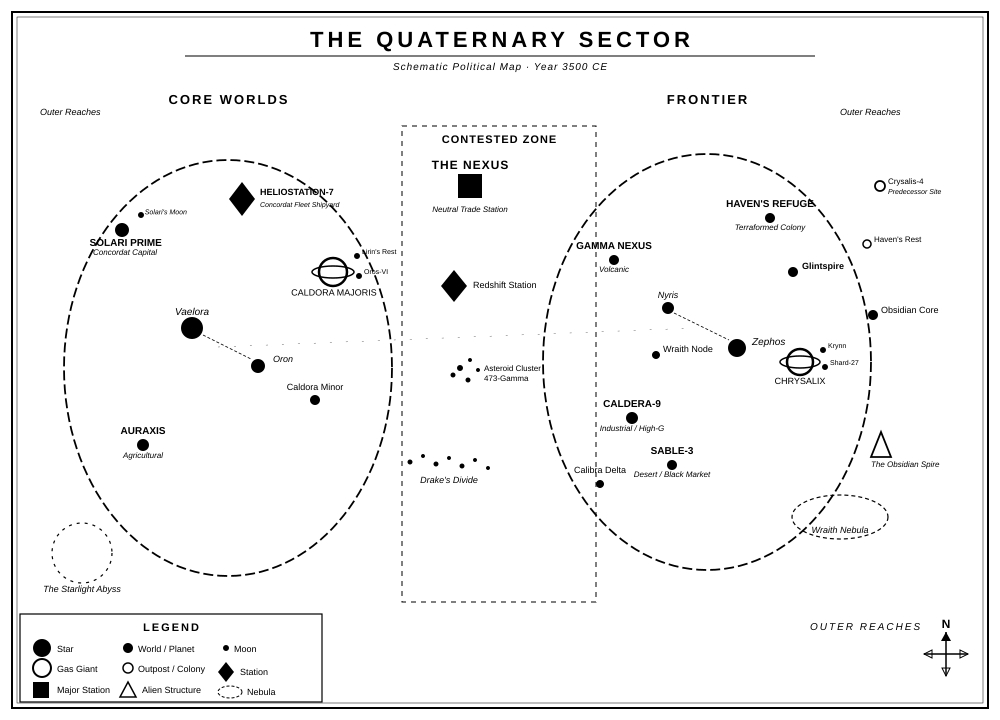

The Shattered Reach
The Shattered Reach
The Shattered Reach is a solo tabletop RPG set in a sector where humanity’s fractured factions fight each other while something far older watches and waits. You are one person in one ship: a deserter, a freelance runner, a scavenger who found something in the Outer Reaches that won’t let you go. The factions want you working for them. The Predecessors left warnings no one fully understands. And the Elder Dominion does not announce itself; it seeps in.
This minimalist Solo Role Playing Game is driven by an oracle that overturns your expectations. You ask questions, interpret the answers, and build a story no one scripted.
Introduction
The Shattered Reach follows the following design principles:
- Portable: to play you will need a few common (six-sided) dice and writing materials. Anything else is optional and not essential.
- Rules-Light: the game relies on a few rules and only one solving mechanic, easy to learn and eventually to memorize.
- Tag-based: characters and situations are defined only by qualitative descriptors and no quantitative characteristics.
- Emergent: there are no pre-written stories. The narrative arises from oracle-driven play, shaped by your choices and unexpected twists.
With a focus on quick resolutions, The Shattered Reach throws you headfirst into the heart of the action. Your character will be defined by thematic tags, such as “Cunning Smuggler”, “Reluctant Diplomat”, “Ruthless Opportunist”, or “Haunted Survivor”. Situations and challenges in the game are also shaped by evocative tags, like “Predecessor Ruins”, “Barren Wasteland”, or “Hostile Wildlife”.
What is a Role Playing Game (RPG)?
A role-playing game (RPG) is a type of game in which players assume the roles of fictional characters and act out their actions and decisions within a narrative or imaginary setting. The outcome of these actions and decisions is often determined by a set of rules and game mechanics, such as dice rolls or statistical attributes of the characters. Players may also collaborate to create a shared story or narrative through their characters’ actions and interactions.
What is a Solo RPG?
In a solo RPG a single player takes on the roles of one or more characters, while also simultaneously managing some elements of the game world. These games typically involve the use of a rule system and game mechanics to determine the outcome of actions taken by the player-controlled characters. Unlike a gamebook (such as the Fighting Fantasy, Lone Wolf, and Tunnels & Trolls series) a solo RPG is not a form of interactive, forked narrative in which outcomes are pre-determined and limited by the author’s choices.
Through the interaction of player, oracle, tools, and prompts, the character’s actions will build an emergent narrative within whose boundaries anything can be attempted, without predetermined limits.
Safety Tools
You will play alone, but be sure to play in an environment that is comfortable for you, without overexerting yourself, and reserve the option to stop as soon as you feel uncomfortable for any reason, physical or emotional. Don’t be afraid to tackle new themes, but do so in full awareness of your boundaries.
Minimum Requirements
To play The Shattered Reach you will need:
- 4 six sided dice (also known as d6s): two pairs of different colors
- Paper and writing tools: at least a sheet of scrap paper and and pencil, but index cards or sticky notes are a fine addition
- Character sheet: you may use the provided sheet at the back or a simple index card.
- Notebook: The Shattered Reach is not a solo journaling game, you can easily play it in the “theater of mind”. But you can keep track of you game if you feel the need!
The Premise
Millennia ago, a fleet of Longreach Arks departed a dying Earth, carrying the remnants of humanity in search of a new home. The journey, remembered in fragments as the Exodus Drift, was fraught with setbacks and hardship, but eventually, the descendants of these pioneers reached the Quaternary Sector. Their luck was undeniable: a stable star cluster with dozens of planets and hundreds of moons, some ripe for settlement, others rich in resources.
Yet from the moment of landfall, the differences became stark. The Ark-shards that reached terraform-ready planets quickly blossomed into thriving colonies, while those that landed on harsher worlds began a bitter struggle, not just against hostile environments, but against their fellow settlers. This fragmented network of asynchronous worlds, each developing at different speeds, spiraled into conflict, culminating in the Generation War: a brutal, system-wide confrontation that lasted decades.
Another generation has since passed, but the embers of division smolder beneath a tenuous peace, threatening to reignite. Meanwhile, in the shadowed expanses of the Outer Reaches, the discovery of alien ruins, remnants of an extinct civilization known only as the Predecessors, hints at a far greater peril. Warnings etched in forgotten stone and enigmatic artifacts suggest that humanity’s true trial has yet to come: an inexorable, alien threat waiting for the perfect moment to strike.
Introduction to the Quaternary Sector
- A New Beginning: Millennia ago, humanity fled a dying Earth aboard the Longreach Arks, generational ships searching for a new home. After centuries of hardship, they found the Quaternary Sector, a stable star system with dozens of planets and moons.
- A Fractured Society: The colonies that formed in the sector developed unevenly. Some thrived on terraformable worlds, while others struggled to survive in harsh environments. These disparities sparked the Generation War, a system-wide conflict that left deep scars and unresolved tensions.
- The Looming Divide: Today, the Concordat, an alliance of wealthy Core Worlds, maintains dominance through advanced technology and military power. The Frontier League, made up of struggling outer colonies, fights for independence. In between, smugglers, pirates, and traders navigate the dangerous Contested Zone.
- Mysteries of the Past: Scattered throughout the sector are the ruins of the Predecessors, an ancient civilization wiped out by the enigmatic Elder Dominion. These ruins harbor powerful but dangerous artifacts, offering both opportunity and peril.
- An Unseen Threat: The Elder Dominion, an ancient coalition of alien species, observes humanity from the shadows, testing its strength and unity. If humanity fails to overcome its divisions, it may face the same fate as the Predecessors.
Chronology of the Quaternary Sector
I. The Earth Exodus (c. 2200 - 3000 CE)
Themes: Desperation, Unity in Crisis, Innovation
- 2200 CE - Climate Catastrophe and Global Collapse: Earth’s environment becomes uninhabitable due to climate change and ecological collapse. Wars erupt over dwindling resources.
- 2250 CE - The Exodus Initiative: United Earth factions pool resources to build generational ships. These massive, self-sufficient vessels are humanity’s last hope.
- 2300 CE - The Launch of the Generational Fleet: Thousands leave Earth on dozens of generational ships. Each vessel is designed to function independently, with a wide genetic pool, hydroponic systems, and cultural archives.
- 2300-3000 CE - The Long Journey: The fleet faces near-extinction from resource failures, internal strife, and technical breakdowns. Some ships are lost, while others merge with fellow travelers.
II. The Founding Era (c. 3000 - 3100 CE)
Themes: Hope, Division, Adaptation
- 3015 CE - Arrival in the Quaternary Sector: The first generational ships reach the sector and begin surveying planets.
- 3020 CE - The Core Settlements Begin: Terraforming and settlement of the first habitable planets commence. These colonies, later the Core Worlds, quickly establish a technological and agricultural base.
- 3030 CE - Harsh Planets Claim Early Lives: Struggler colonies face brutal environments, with many lives lost to harsh gravity, toxic atmospheres, or resource scarcity.
- 3050 CE - The Harvester Worlds Emerge: Resource colonies are established on mineral-rich moons and asteroids, often under the control of more powerful planets.
III. The Colonial Expansion (3100 - 3300 CE)
Themes: Expansion, Inequality, Cultural Divergence
- 3100 CE - Formation of Trade Networks: Orbital mechanics-based trade routes form between colonies, fostering interdependence but also exposing disparities.
- 3150 CE - Divergence of Cultures: Isolated colonies develop unique languages, customs, and even physiological adaptations.
- 3180 CE - The “Three Tiers” System Solidifies: The Core, Struggler, and Harvester worlds emerge as distinct socio-economic categories.
- 3250 CE - First Space Conflicts: Disputes over trade and resources spark the first armed skirmishes in space. These are largely small-scale and localized.
IV. The War of the Colonies (3300 - 3350 CE)
Themes: War, Betrayal, Consequences
- 3300 CE - Economic Collapse on Struggler Worlds: Exploitation by Core Worlds leads to unrest in struggling colonies. Calls for economic reform are ignored, igniting rebellion.
- 3310 CE - The War of the Colonies Begins: Struggler colonies form an alliance and declare war on the Core Worlds. Harvester worlds are drawn in as battlegrounds.
- 3330 CE - The AI Schism: Desperate Struggler factions deploy rogue AI in combat, leading to massive civilian casualties. Post-war, AI is heavily restricted.
- 3350 CE - The Concordat Treaty: The war ends with a negotiated truce. The Core Worlds form the Concordat, an alliance promoting trade and stability. Struggler colonies form the Frontier League, fostering independence.
V. The Reconstruction Era (3350 - 3500 CE)
Themes: Recovery, Mistrust, Uneven Progress
- 3360 CE - Technological Renaissance on Core Worlds: Advanced terraforming and FTL technologies emerge but remain prohibitively expensive.
- 3380 CE - Rise of Privateering: Pirates and privateers flourish as tensions persist between Concordat and Frontier League factions.
- 3400 CE - Alien Ruins Discovered: Expeditions to the Outer Reaches uncover evidence of an extinct alien civilization. This discovery fuels both scientific curiosity and religious fervor.
- 3450 CE - Alien Artifacts Activate: Strange signals and encrypted warnings are triggered by human presence in alien ruins. Rumors of a coming threat spread, dismissed as superstition by most.
- 3475 CE - First Encounter with Dominion Probes: A mysterious asteroid-sized bioship is destroyed by Concordat forces after it scans a Core colony.
- 3485 CE - The Nexus Uprising: A rebellion on the Nexus trade hub reveals hidden Frontier League sympathies, deepening Concordat distrust.
VI. The Present Day (3500 CE)
Themes: Fragile Peace, Rising Threats, Uncertainty
- Economic Disparities Deepen:
- Concordat worlds grow richer, while Frontier colonies face economic stagnation. Tensions rise as separatist movements gain momentum.
- Concordat worlds grow richer, while Frontier colonies face economic stagnation. Tensions rise as separatist movements gain momentum.
- Religious Movements Proliferate:
- Alien ruins inspire cults, some of which predict an apocalyptic event linked to the ruins’ warnings.
- Alien ruins inspire cults, some of which predict an apocalyptic event linked to the ruins’ warnings.
- The Dominion Watches:
- Strange phenomena, such as geometric patterns on moons and genetically altered microbes, hint at Elder Dominion surveillance.
- Strange phenomena, such as geometric patterns on moons and genetically altered microbes, hint at Elder Dominion surveillance.
- Military Buildups Resume:
- Both Concordat and Frontier forces prepare for the possibility of another war, while whispers of an external threat grow louder.
- Both Concordat and Frontier forces prepare for the possibility of another war, while whispers of an external threat grow louder.
- Deciphering the Warning (Present Day):
- Archaeologists partially decode alien messages, suggesting humanity is being evaluated for extermination by the Elder Dominion.
Playable Themes
In The Shattered Reach, the narrative is built around several rich themes you can explore. Each theme provides opportunities for character-driven stories, factional intrigue, and existential stakes.
1. Survival Amidst Ruin
- Struggle for Resources: Colonies fight to survive in hostile environments, with limited supplies and constant threats. You must manage desperate conditions, balancing self-preservation with the needs of others.
- The Scarred Legacy of War: The aftermath of the Generation War leaves colonies in ruin, haunted by old grudges and leftover weapons. You may encounter relics of the conflict or face choices shaped by the scars of history.
- The Fragility of Progress: From crumbling terraforming machines to malfunctioning life-support systems, survival often depends on making do with broken technology. Repair, adapt, or innovate, or face extinction.
2. Uneven Development and Inequality
- The Core vs. the Frontier: The wealth and technology of the Core Worlds stand in stark contrast to the harsh conditions and ingenuity of the Frontier colonies. You may align with one side, rebel against both, or remain independent and play both sides.
- Exploration of Power Dynamics: From exploitative trade agreements to forced labor, inequality drives many conflicts. How you respond, whether through resistance, compromise, or exploitation, can reshape the sector.
- Factional Dependence: The Core and Frontier both rely on smaller groups to fill their ranks and bolster their causes, but these relationships are often exploitative. You must decide whether to resist, negotiate, or play factions against each other.
3. Exploration and Discovery
- The Mysteries of the Outer Reaches: From uncharted worlds to enigmatic Predecessor ruins, the Outer Reaches beckon with promises of riches, power, and answers. You may lead expeditions to unlock ancient secrets, or uncover terrors best left buried.
- Alien Artifacts and Temptation: Predecessor technology offers unimaginable power but carries risks of catastrophic consequences. How far will you go to exploit these artifacts, and how will the factions react to your discoveries?
- Unveiling the Dominion: Subtle signs of the Elder Dominion, cryptic symbols, cloaked bioships, and whispers of sabotage, force you to grapple with the sector’s greater, hidden threat.
4. Moral Ambiguity and Hard Choices
- Complex Factions: No faction in the sector is wholly good or evil. The Concordat’s order comes at the cost of exploitation; the Frontier League’s rebellion sacrifices stability. You must work through these gray areas to shape your allegiances.
- Sacrifice vs. Survival: Whether it’s deciding to save a few at the cost of many, or sacrificing personal values to ensure survival, the setting thrives on dilemmas with no perfect solution.
- Ethics of Progress: Humanity’s experimentation with alien technology raises questions of morality and hubris. You may choose to embrace such advancements, or destroy them for the greater good.
5. Political Intrigue and Power Struggles
- Factional Tensions: Espionage, sabotage, and diplomacy run between the Concordat, Frontier League, Independents, and religious factions. Shifting alliances and betrayals keep the political landscape in motion.
- Corporate Manipulation: Beyond governments, powerful trade guilds and corporations dominate much of the sector. You may find yourself a pawn, or a rebel, against these influential forces.
- Rebellion and Revolution: The seeds of revolution lie in the discontent of the Frontier and the ambition of the Concordat’s rivals. You may incite rebellion, suppress uprisings, or exploit the chaos for personal gain.
6. Existential Threats and Cosmic Horror
- The Elder Dominion’s Shadow: The Dominion operates on a timescale and logic far beyond humanity’s comprehension. You may uncover their presence, face their agents, or become an unwitting pawn in their larger plans.
- The Unknown Depths of the Predecessors: The ruins and artifacts of the Predecessors offer tantalizing glimpses of knowledge, but also terrifying reminders of their extinction. Delving too deep may awaken something best left undisturbed.
- Humanity’s Place in the Galaxy: As you encounter signs of other civilizations, both extinct and active, you must confront the possibility that humanity is insignificant, or worse, destined for eradication.
7. Personal Journeys and Transformation
- Adaptation to Alien Environments: From genetic modification to psychological strain, the sector’s harsh conditions change people. You may explore the cost of adapting to survive.
- Relationships Across Divides: Personal bonds can form or break across faction lines, providing you with emotional stakes amid political and cosmic conflicts.
- Legacy and Redemption: Grappling with your ancestors’ actions during the Generation War, or trying to leave your own mark, you can explore legacy, forgiveness, and second chances.
8. Freedom and Independence
- Life as an Independent: From smuggler to bounty hunter, you can carve out your own path, balancing survival with freedom in the lawless Contested Zone.
- Outrunning Authority: Evading Concordat regulations, pirate blockades, and Dominion probes can lead to adrenaline-pumping adventures where freedom is constantly at risk.
- Building Something New: Establishing a colony, forming a new faction, or revitalizing a forgotten outpost: you can shape your own vision of the future in the Shattered Reach.
Characters
In The Shattered Reach, characters shape the fate of the Quaternary Sector. They are defined by their traits, motivations, and the challenges they face.
Everything is a Character!
In The Shattered Reach, everything that matters to the story can be treated as a character:
- Non-Playing Characters (NPCs) like faction leaders, rogue traders, or enigmatic scientists.
- Foes, from space pirates to Dominion bio-mimics.
- Organizations, such as the Concordat or resistance cells.
- Monsters, like strange alien creatures found in the Outer Reaches.
- Relevant Objects, including vehicles, ships, and even Predecessor artifacts.
Your Protagonist is described by some fixed traits:
- Name: The name should be iconic and consistent with the tone and setting of the story.
- Concept: A concise description of the character’s profession, background, and abilities. The best are adjective-name pairings, like “Venturous Smuggler” or “Child Prodigy”.
- Skills (x2): Abilities not necessarily character-specific but not characteristics common to all. “Smart” is not a skill, “Engine Whisperer” is.
- Frailty: Something that could potentially get in the way of the character, either physically, mentally, or socially.
- Gear (x2): Particular equipment supplied to the character in coherence with the setting. Everyday items are taken for granted and do not fall under this trait.
- Goal: The long-term objective.
- Motive: What drives the pursuit of the goal.
- Nemesis: A person or organization that hinders the protagonist. It can emerge during the first game sessions, it may or may or not be the direct antagonist of the story, ready to appear to make life even more difficult
- Luck: The measure of a character’s ability to avoid ill fortune or an inauspicious outcome. It applies only in Conflicts and automatically recharges when they end. Luck starts and caps at 6.
These traits are described by tags, descriptive words or phrases that can identify anything in the game world. Even the details of the environment in which the action moves and conditions (physical or mental) of the characters are tags.
They are qualitative representations. They are not quantitative measures.
Character Traits
Concepts
| 1 | 2 | 3 | 4 | 5 | 6 | |
|---|---|---|---|---|---|---|
| 1 | Exiled Noble | Ruthless Pirate | Rebel Commander | Starship Engineer | Ambitious Trader | Concordat Deserter |
| 2 | Haunted Soldier | Frontier Healer | Rogue Archaeologist | Alien Tech Specialist | Spectral Division Washout | Cold Mercenary |
| 3 | Stubborn Miner | Idealistic Pilot | Outlaw Smuggler | Curious Scientist | Wily Informant | Bold Explorer |
| 4 | War Veteran | Cynical Captain | Visionary Leader | Black Market Dealer | Determined Spy | Jump Point Runner |
| 5 | Reckless Pilot | Rookie Freelancer | Cunning Saboteur | Pragmatic Mechanic | Fearless Scavenger | Rogue Politician |
| 6 | Mysterious Scholar | Charismatic Leader | Frustrated Inventor | Dogged Investigator | Betrayed Rebel | Rootless Drifter |
Skills
| 1 | 2 | 3 | 4 | 5 | 6 | |
|---|---|---|---|---|---|---|
| 1 | Starship Repair | Tactical Genius | Relic Decipherer | Backroom Broker | Quick Reflexes | Sharpshooter |
| 2 | Energy Weapons Expert | Natural Leader | Stealth Master | Hack Specialist | Fearless Pilot | Commands a Room |
| 3 | Alien Tech Tinkerer | Battlefield Medic | Asteroid Miner | Scavenger Supreme | Codebreaker | Empathy Expert |
| 4 | Barter Prodigy | Infiltration Ace | Parkour Runner | Sniper’s Precision | Thruster Control | Smooth Talker |
| 5 | Cultural Historian | Expert Tracker | Salvage Retriever | Zero-G Combatant | Linguist Savant | Bluff Master |
| 6 | Robotics Wizard | Spacesuit Specialist | Explosives Handler | Reads Alien Patterns | Field Navigator | Fearless Raider |
Frailties
| 1 | 2 | 3 | 4 | 5 | 6 | |
|---|---|---|---|---|---|---|
| 1 | Concordat Warrant Outstanding | Haunted Past | Dominion-Touched | Overconfident | Distrusted Reputation | Impulsive Nature |
| 2 | Untrusting | Psionic Static Episodes | Stubborn Attitude | Fear of Heights | Phobia of AI | Greedy Instincts |
| 3 | Guilt-Ridden | Chronic Injury | Reckless Gambler | Outcast Status | Naïve Optimist | Self-Doubting |
| 4 | Obsessed with Revenge | Chronic Insomnia | Easily Distracted | Poor Social Skills | Distrusts Authority | Troubled Family |
| 5 | Cynical Outlook | Easily Provoked | Paranoid Thinker | Overreliance on Luck | Mistrust of Others | Obsession with Artifacts |
| 6 | Fear of Failure | Frontier Blood Debt | Overburdened by Debt | Broken Moral Compass | Claustrophobic | Alienation from Group |
Gear
| 1 | 2 | 3 | 4 | 5 | 6 | |
|---|---|---|---|---|---|---|
| 1 | Custom Pistol | Predecessor Scanner | Repair Drone | Reinforced Spacesuit | EMP Grenades | Stealth Cloak |
| 2 | Alien Artifact | Jet Boots | Data Pad | Plasma Blade | Medical Kit | Holographic Map |
| 3 | Portable Shield Generator | Fusion Torch | Stasis Pod | Cargo Harness | Advanced Toolkit | Pirate Blaster |
| 4 | Energy Rifle | Scanner Probe | Tactical Harness | Survival Tent | Emergency Beacon | Cloaking Device |
| 5 | Starship Nav System | Combat Drone | Sensor Scrambler | Explosive Charges | Disguise Kit | High-G Thrusters |
| 6 | Bio-Adaptive Suit | Personal AI Unit | Solar Pack | Terrain Mapper | Security Override Kit | Magnetic Boots |
Names
Female Names
| 1 | 2 | 3 | 4 | 5 | 6 | |
|---|---|---|---|---|---|---|
| 1 | Alara | Selene | Lyra | Nova | Elara | Cerys |
| 2 | Kaela | Maris | Rhea | Zera | Vynra | Elyss |
| 3 | Serina | Nyssa | Orla | Astra | Liora | Daris |
| 4 | Tahlia | Evelis | Mira | Xyra | Rynae | Lyren |
| 5 | Calla | Jorina | Isla | Fynne | Nerissa | Pyrrha |
| 6 | Eryn | Saphira | Corra | Evana | Lyssa | Delyra |
Male Names
| 1 | 2 | 3 | 4 | 5 | 6 | |
|---|---|---|---|---|---|---|
| 1 | Kael | Daren | Orion | Niko | Varen | Casian |
| 2 | Auren | Tyrian | Ronan | Zorik | Eryndor | Marius |
| 3 | Thane | Jarek | Kiran | Alaric | Lyric | Drevan |
| 4 | Corvan | Rian | Evander | Soren | Kaiden | Vryn |
| 5 | Silas | Torin | Lucan | Myles | Alton | Daxen |
| 6 | Kellan | Aric | Leith | Xarion | Finnian | Davros |
Surnames
| 1 | 2 | 3 | 4 | 5 | 6 | |
|---|---|---|---|---|---|---|
| 1 | Vale | Thorne | Solari | Draven | Ardent | Veylan |
| 2 | Corvin | Marsden | Eryss | Kaelith | Lyndon | Fenros |
| 3 | Nyvaris | Redmane | Silaren | Torrance | Zephyr | Graymere |
| 4 | Harkane | Rothern | Valeris | Starborne | Erenne | Nightfall |
| 5 | Ardyn | Voss | Lucaris | Ironfell | Calthera | Duskmoor |
| 6 | Strathen | Lycoris | Vyrannis | Emberfall | Solvayne | Frostborn |
Nicknames
| 1 | 2 | 3 | 4 | 5 | 6 | |
|---|---|---|---|---|---|---|
| 1 | Blaze | Nova | Vex | Sparks | Echo | Wraith |
| 2 | Shadow | Drift | Iron | Fang | Shard | Rook |
| 3 | Ghost | Storm | Torch | Razor | Flux | Thorn |
| 4 | Ember | Dagger | Scout | Breaker | Verge | Flint |
| 5 | Frost | Cipher | Jet | Axle | Snap | Spur |
| 6 | Pyro | Arc | Bolt | Jinx | Dash | Clutch |
Rules
The Shattered Reach is a minimalist Solo Role Playing Game designed to be played with only one character (the Protagonist). You’ll guide them through the story that will unravel during the game, asking closed questions to an Oracle which will help you overturn your expectations.
Every now and then you will be surprised with an unexpected twist!
Keep The Action In Motion
A game in The Shattered Reach is a succession of scenes. A scene is a unit of time in which a certain action takes place in pursuit of a certain short-term goal.
In The Shattered Reach at each scene:
- Identify what you expect from the scene. Compared to traits, goal, and motivation determine the Protagonist’s action. What might be the reaction of the game world?
- Test your expectations. When you are uncertain (or overconfident) about the reaction to your actions, ask the Oracle a closed question (answer is Yes or No), considering the tags involved to determine if there is an Advantage or Disadvantage.
- Interpret the result. Is the Oracle’s answer in line with your expectations? If not, in the context in which the scene takes place, how should an answer that subverts them be considered?
This sequence will come to you naturally after some practice. Use it as a guideline the first few times.
Consulting the Oracle
When you need to test your expectations you’ll ask the Oracle a closed question.
You’ll need 2d6 in one color (Chance Dice), and 2d6 in another (Risk Dice).
To resolve a closed question, roll one Chance Die and one Risk Die:
- If the Chance Die is highest, the answer is Yes.
- If the Risk Die is highest, the answer is No.
- If both are low (3 or less), add a but….
- If both are high (4 or more), add an and….
- If both are equal, the answer is Yes, but…. Add a point to the Twist Counter.
| Dice Value | Chance Die > Risk Die | Risk Die > Chance Die |
|---|---|---|
| Both <= 3 | Yes, but… | No, but… |
| Both >= 4 | Yes, and… | No, and… |
| Mismatched | Yes | No |
| Equal | Yes, but… Add 1 to the Twist Counter |
Advantage and Disadvantage
If circumstances or positive tags grant an advantage, add a Chance Die to the roll. Otherwise, when hindrances or negative tag cause a disadvantage, add a Risk Die. In both cases keep only the higher die of the added type when you check the roll.
Consider tags intuitively and not quantitatively, using the context of the situation at play. It is important to keep the flow of play fast and not accounting for advantages and disadvantages numerically!
Twist Counter
The Twist Counter is a measure of the rising tension in the narrative. At the beginning is set to 0. Every time a double throw (dice are equal) happens, add 1 to the Counter. If the Counter is below three, consider the answer as “Yes, but…”. Otherwise a Twist happens and resets the Counter.
Roll 2d6 and consult the following Twist Table to determine what kind of twist happens.
| D6 | Subject | Action |
|---|---|---|
| 1 | A third party | Appears |
| 2 | The hero | Alters the location |
| 3 | An encounter | Helps the hero |
| 4 | A physical event | Hinders the hero |
| 5 | An emotional event | Changes the goal |
| 6 | An object | Ends the scene |
Interpret the two-word sentence in the context of the current scene. Twists will keep the plot and events going in unexpected ways.
Conflicts
A Conflict is any situation in which opponents clash, attacking, defending, or wearing each other down in order to win. This applies both in a practical and metaphorical sense.
So, a Conflict is not only limited to combat (or fighting) in the strict sense but also to competitive situations (such as contests, duels, verbal confrontations, etc.) in which two or more characters (including vehicles, of course!) compete.
Conflicts can be resolved in different ways depending on preferences and context:
- Ask a single closed question. The Oracle’s answer determines the outcome of the conflict.
- Ask a series of closed questions to resolve current single actions.
- Use the rules of Harm & Luck below.
Note that the Twist Counter does not apply to Harm & Luck. Instead, it is used regularly if the Conflict is handled with closed questions.
If the conflict is resolved by applying damage to the Luck trait, roll the dice to determine whether the protagonist causes damage to the opponent or suffers damage due to counterattack or failed defense. The rolls are player facing only.
The damage reduces the Luck of the target, whether protagonist or NPC. When the Luck runs out, the character has lost the conflict.
The final outcome depends on the context. Do you get caught? Are you seriously injured? You may even die if that fits the narrative.
| Answer | Do you get what you want? | Harm |
|---|---|---|
| Yes, and… | You get what you want, and something else. | Cause 3 |
| Yes… | You get what you want. | Cause 2 |
| Yes, but… | You get what you want, but at a cost. | Cause 1 |
| No, but… | You don’t get what you want, but it’s not a total loss. | Take 1 |
| No… | You don’t get what you were after. | Take 2 |
| No, and… | You don’t get what you want, and things get worse. | Take 3 |
Determine the mood of the next scene
At the end of the current scene sometimes you will be clear about the direction to take, other times you may need to determine the general mood of the next one. In this case roll 1d6 and consult the following table:
| D6 | Next Scene |
|---|---|
| 1-3 | Dramatic scene |
| 4-5 | Quiet Scene |
| 6 | Meanwhile… |
- A dramatic scene does not break the tension of the previous scene but carries it further forward, introducing further obstacles or difficulties.
- During a quiet scene there is time to take a breath, to heal, to make plans for the next steps and to deepen relationships.
- A meanwhile scene takes place somewhere else, other than where the hero is. It cuts to villains or other plot-important characters.
Open-Ended Question or Get Inspired
To answer an Open-Ended question, roll 1d6 once on each of the Inspiration Tables (roll at least a verb and a noun, adjectives are optional).
When the story ends
At the end of the adventure you may add another trait to the character. It is better that this is related to how the story just ended and can be either a Skill, Gear, a new Frailty, or even a new Nemesis! You can also modify an existing trait to better represent an enhanced expertise.
Also update the list of NPCs, Locations, and Events that may show up again in future adventures.
Exploring the Stars
In The Shattered Reach, space travel is both a means of survival and a journey into the unknown. Navigating the vast and dangerous expanses of the Quaternary Sector can lead to encounters with hostile factions, mysterious phenomena, and ancient secrets.
Starting a Journey
You do not plan a journey before play; you discover it through play. Let the oracle establish your situation:
- Do you know where you’re going, or are you following a rumour?
- Is your ship in good shape when you leave, or already carrying a problem?
- Are you leaving clean, or is someone already looking for you?
Answer these with the oracle. Your ship’s tags (from the Shipyard or your own character sheet) determine Advantage or Disadvantage on the rolls ahead.
The Journey
A. Space Travel Mechanics
For each major leg of the journey, ask the Oracle: Do I reach my next waypoint without serious trouble? Apply your ship’s tags to determine Advantage or Disadvantage as normal. Interpret the result:
- Yes: You arrive without incident.
- Yes, and…: You arrive early or find an unexpected opportunity en route.
- Yes, but…: You arrive, but at a cost: fuel loss, minor hull damage, or you’ve been noticed.
- No, but…: You don’t reach your waypoint, but the complication is manageable. Roll on the Encounters in Space table.
- No: You’re stopped. Roll on the Encounters in Space table.
- No, and…: A serious crisis. Roll on the Encounters in Space table and add a second complication.
When traveling through hazardous areas (asteroid belts, nebulae, ion storm corridors), add a Risk Die to the roll.
B. Approaching the Destination
- Scouting the Area:
- Before entering orbit or landing on a celestial body, roll the Oracle to scout the area using your ship’s sensors:
- Yes: Gain a clear understanding of potential dangers or points of interest.
- No: Sensors fail, and you’re flying blind.
- Yes, but…: Detect useful information but miss hidden hazards.
- Yes, and…: Discover extra details, such as hidden resources or an ally in the area.
- No, but…: Sensors fail, but there are no immediate threats.
- No, and…: Scouting fails and triggers an immediate complication, such as an ambush or unstable terrain.
- Yes: Gain a clear understanding of potential dangers or points of interest.
- Before entering orbit or landing on a celestial body, roll the Oracle to scout the area using your ship’s sensors:
- Landing or Docking:
- Once near your destination, describe the location using the Oracle or a pre-defined map. Decide whether the environment is hostile, neutral, or friendly.
- Use the Oracle or your ship’s capabilities to assess whether the landing/docking is smooth or requires quick improvisation.
- Once near your destination, describe the location using the Oracle or a pre-defined map. Decide whether the environment is hostile, neutral, or friendly.
Scanning the Unknown
When you are in the Outer Reaches or any uncharted region, you may take time to scan. Ask the Oracle: Is there something here that isn’t on any map?
- Yes, and…: Roll on the Hidden Reaches table. The location is accessible and undisturbed.
- Yes: Roll on the Hidden Reaches table. Something is there, but it is not unguarded.
- Yes, but…: Roll on the Hidden Reaches table. The location has already been found by someone else.
- No, but…: Nothing here, but you pick up a fragment of a signal suggesting something nearby. Note it; pursue it later.
- No / No, and…: Empty space. And something may have noticed you looking.
Arriving at the Destination
Upon reaching your destination, resolve the next steps using your character’s skills and the Oracle. The destination might include:
- Predecessor Ruins: Investigate the ancient structures for artifacts and clues while avoiding potential traps.
- Factional Conflict: Engage in diplomacy, combat, or espionage depending on the political situation.
- Natural Hazards: Survive extreme weather, unstable terrain, or hostile wildlife.
Starships
In The Shattered Reach, starships are essential to exploration, survival, and power. Each vessel is a marvel of human ingenuity, designed to endure the challenges of interstellar travel while reflecting the personality of its crew or faction. From sleek explorers to imposing warships, starships are not just tools but characters in their own right.
Whether piloting a personal craft or commanding a massive freighter, the choices made in the Shipyard can define the trajectory of a journey through the vast expanse of the Quaternary Sector.
Starship Traits
Concepts
| 1 | 2 | 3 | 4 | 5 | 6 | |
|---|---|---|---|---|---|---|
| 1 | Trade Freighter | Frontier Scout | Mining Barge | Smuggler’s Runner | Patrol Cruiser | Surveillance Drone |
| 2 | Medical Frigate | Research Vessel | Pirate Raider | Diplomatic Yacht | Heavy Gunship | Silent Recon Ship |
| 3 | Salvage Hauler | Orbital Repairer | Light Interceptor | Long-Range Courier | Planetary Defense | Explorer Craft |
| 4 | Deep Space Surveyor | Covert Transport | Independent Trader | Prison Transport | Armed Transport | Terraforming Vessel |
| 5 | Refueling Station | Search and Rescue | Mercenary Corvette | High-Speed Transport | Combat Frigate | Sensor Array Ship |
| 6 | Colony Seed Ship | Recon Cruiser | Black Ops Vessel | Diplomatic Shuttle | Armored Freighter | Nexus Supply Runner |
Skills
| 1 | 2 | 3 | 4 | 5 | 6 | |
|---|---|---|---|---|---|---|
| 1 | Fast Sub-Light Drive | Advanced Sensors | Stealth Coating | Cargo Optimization | Broadside Cannons | Atmospheric Entry |
| 2 | Efficient Shields | High-Capacity Reactor | Deep Space Scanning | Hidden Compartments | Heavy Armor | Long-Range Comms |
| 3 | Enhanced Maneuvering | Automated Systems | ECM (Jamming) | Passenger Capacity | Auxiliary Craft | Modular Equipment |
| 4 | Medical Facilities | Research Labs | Secure Cargo Bays | Strategic Deployment | Drone Support | Self-Sufficient Systems |
| 5 | Magnetic Clamps | Fuel Conservation | Defensive Turrets | Cloaking Field | Repair Docks | Mining Lasers |
| 6 | Stasis Pods | Orbital Defense Systems | Advanced Weapon Systems | Compact Design | Redundant Systems | Advanced Life Support |
Frailties
| 1 | 2 | 3 | 4 | 5 | 6 | |
|---|---|---|---|---|---|---|
| 1 | Slow Acceleration | High Maintenance | Limited Fuel Range | Contraband Risk | Fragile Hull | Loud Engines |
| 2 | Poor Maneuverability | Power-Hungry Systems | No Defensive Weapons | Outdated Tech | Prone to Overheat | Weak Point in Hull |
| 3 | Sensor Blind Spots | Susceptible to EMP | Unstable Reactor | Fire-Prone Systems | Pirates Target It | Requires Crew |
| 4 | Frequent Breakdowns | Hard to Pilot | Restricted Zones | No Atmospheric Capability | Lacks Modularity | Poor Radiation Shielding |
| 5 | High Fuel Cost | Inflexible Design | Slow Weapon Recharge | Heavy and Sluggish | Vulnerable to Mines | Communication Delays |
| 6 | Weak Structural Integrity | Navigation Complexity | Incompatible with FTL Gates | Easily Detected | Limited Internal Storage | Sensor Lag |
Gear
| 1 | 2 | 3 | 4 | 5 | 6 | |
|---|---|---|---|---|---|---|
| 1 | Cargo Nets | Reinforced Bulkheads | Diplomatic Clearance | Smuggling Compartments | Pulse Cannons | Advanced Mapping Systems |
| 2 | Heavy-Duty Clamps | Repair Drones | Extra Fuel Tanks | Low-Profile Panels | EMP Launchers | Cloaking Device |
| 3 | Medical Scanner | Shield Boosters | Secure Comms Array | Stasis Chambers | Recon Drones | High-G Thrusters |
| 4 | Atmospheric Stabilizers | Advanced Life Support | Holographic Decoys | Scanner Arrays | Tactical AI | Hydroponic Modules |
| 5 | Targeting Systems | Modular Storage Bays | Engine Overdrive | Orbital Drop Pods | Plasma Weapons | Automated Research Equipment |
| 6 | Defense Turrets | Emergency Beacon | Precision Drills | Launch Hangars | Magnetic Grapplers | High-Intensity Lasers |
The Shipyard
Here in the Shipyard, vessels of every kind are constructed to fulfill a wide array of roles. Each ship is unique, combining strengths and flaws that define its purpose and character. Choose wisely, for your starship is not only your home but also your key to survival.
Trailblazer Scout
- Concept: Long-Range Explorer
- Skills: Efficient Shields, Advanced Sensors
- Frailty: Limited Cargo Space
- Gear: High-Resolution Mapping Tools, Extra Fuel Tanks
Steel Haven
- Concept: Medical Frigate
- Skills: Medical Facilities, Advanced Life Support
- Frailty: Poor Maneuverability
- Gear: Emergency Pods, Portable Hospital Bay
Silent Blade
- Concept: Covert Operations Vessel
- Skills: Cloaking Field, Advanced Stealth Coating
- Frailty: Fragile Hull
- Gear: ECM Jammers, Smuggling Compartments
Titan Forge
- Concept: Industrial Freighter
- Skills: Magnetic Clamps, Heavy-Duty Cranes
- Frailty: Vulnerable to Piracy
- Gear: Reinforced Bulkheads, Repair Drones
Pulsar Raider
- Concept: High-Speed Gunship
- Skills: Broadside Cannons, Enhanced Maneuvering
- Frailty: Limited Fuel Range
- Gear: Targeting Systems, Plasma Weapons
Planet/Moon Generator
Concepts
| 1 | 2 | 3 | 4 | 5 | 6 | |
|---|---|---|---|---|---|---|
| 1 | Arid Wasteland | Ocean World | Cracked Volcanic | Frozen Ice Moon | Dense Jungle World | Rocky Plateau |
| 2 | Gas Giant | Ringed Beauty | Desert Expanse | Irradiated Crater | Foggy Swamp Moon | Shifting Dunes |
| 3 | Tidal Lock Moon | Industrialized | Terraforming Site | Metallic Core | Lush Biodome | Radioactive Plains |
| 4 | Ruined Colony | Predecessor Ruin | Mining Outpost | Orbiting Station | Lava Flows | Magnetic Mountain |
| 5 | Barren Crater | Crystalline World | Acidic Oceans | Hollowed Core | Refugee Settlement | Storm-Laden Clouds |
| 6 | Dense Urban Sprawl | Cracked Ice Sheet | Overgrown Ruins | Floating Islands | Expanding Canyon | Hidden Labyrinth |
Resources (Skills)
| 1 | 2 | 3 | 4 | 5 | 6 | |
|---|---|---|---|---|---|---|
| 1 | Rare Minerals | Ample Water | Fertile Soil | Predecessor Tech | Solar Energy | Exotic Wildlife |
| 2 | Fuel Deposits | Valuable Gas | Radioactive Ore | Dense Forests | Unique Alloys | Bioluminescent Flora |
| 3 | Thermal Vents | Crystalline Growth | Atmosphere Gases | Natural Caverns | Medicinal Plants | Ancient Artifacts |
| 4 | Lava Channels | Subterranean Lakes | Magnetic Fields | Ice Deposits | Fossilized Fuel | Microbial Life |
| 5 | Abundant Metals | Endless Wind | Stellar Proximity | Underground Water | Rare Isotopes | Gravity Wells |
| 6 | Alien Ecosystem | Hydrogen Clouds | Shielded Shelter | Terraforming Progress | Nutrient-Rich Oceans | Geological Hotspots |
Hazards (Frailties)
| 1 | 2 | 3 | 4 | 5 | 6 | |
|---|---|---|---|---|---|---|
| 1 | Unstable Terrain | Toxic Atmosphere | Hostile Wildlife | Seismic Activity | Frequent Storms | Extreme Cold |
| 2 | High Radiation | Lethal Gravity | Magnetic Anomalies | Erupting Volcanoes | Constant Darkness | Thin Atmosphere |
| 3 | Inhospitable Heat | Electrical Storms | Acidic Rains | Dust Storms | Intense Pressure | Cracked Surface |
| 4 | Constant Quakes | Pirate Activity | Terraforming Failure | Rogue AI | Dangerous Tides | Isolated Location |
| 5 | Ancient Traps | Unknown Pathogens | Dominion Presence | Fuel Scarcity | Contaminated Water | Dense Fog |
| 6 | Shifting Craters | Hidden Sinkholes | Predecessor Defenses | Mind-Altering Fields | Unpredictable Winds | Sudden Collapses |
Features (Gear)
| 1 | 2 | 3 | 4 | 5 | 6 | |
|---|---|---|---|---|---|---|
| 1 | Ringed System | Underground Labyrinth | Towering Spires | Floating Crystals | Bioluminescent Lakes | Expansive Ruins |
| 2 | Subsurface Cities | Orbiting Debris | Hidden Vaults | Sky-Scraping Mountains | Gaseous Canals | Enigmatic Canyons |
| 3 | Ancient Machinery | Frozen Oceans | Unique Flora | Metallic Cliffs | Endless Desert | Towering Foliage |
| 4 | Predecessor Markings | Waterfalls from Orbit | Volcanic Islands | Hollow Moons | Tidal Lock Glow | Hidden Energy Wells |
| 5 | Magnetic Storms | Luminescent Caverns | Layered Atmosphere | Ancient Cityscapes | Underground Rivers | Gravity Distortion Fields |
| 6 | Expansive Plateaus | Glacial Towers | Corrosive Lakes | Spiraling Vortexes | Shattered Remains | Alien Biodomes |
The Quaternary Sector
Political Landscape
The political landscape of the Quaternary Sector is a tense and volatile web of alliances, rivalries, and unaligned forces, shaped by the scars of the Generation War and the enduring inequalities of the post-war era. In the core of the sector, the wealthiest worlds consolidate their power under the banner of the Concordat, wielding advanced technology and immense economic clout to maintain dominance. Beyond their reach, the Frontier League struggles for autonomy and survival, a loose coalition born out of necessity. Meanwhile, a growing tide of independents, from mercenaries to rogue traders, finds opportunity in the chaos, carving out their fortunes in the ungoverned spaces between factions.
Complicating this already fragile balance, the discovery of Predecessor ruins has birthed new religious movements, whose ideologies range from hopeful unity to apocalyptic dread. And in the shadows, resistance movements and unseen forces exploit every crack in the fragile peace, preparing for a reckoning that may come from within, or beyond.
The Concordat: Masters of the Core
The Concordat is a union of the wealthiest and most stable Core Worlds. Formed in the wake of the Generation War, it is an alliance born not out of altruism but out of a shared desire to preserve order, and their own dominance. The Core Worlds enjoy advanced technology, flourishing economies, and access to FTL travel, all of which reinforce their position at the pinnacle of human society.
The Concordat prides itself on being the stabilizing force of the Quaternary Sector. Its leaders argue that without their guidance, the colonies would descend into chaos and self-destruction. Yet their policies often deepen the inequalities that divide the sector. Through trade monopolies and resource control, they exploit the labor and raw materials of less fortunate colonies while funneling wealth back to their own.
Structure and Influence
The Concordat’s rule is shaped by the High Concordia Council, a governing body made up of representatives from the most prosperous Core Worlds. Behind the scenes, powerful trade guilds exert immense influence, controlling vital shipping routes and orbital stations that connect the sector’s farthest reaches.
The Concordat is not without its teeth. Its military arm, the Concordant Fleet, is the most advanced in the sector. Equipped with state-of-the-art fusion-powered vessels and experimental alien technologies, the fleet protects Concordat interests against piracy, rebellion, and Frontier League ambitions.
Yet cracks in their veneer of power are becoming harder to ignore. Discontent festers within the fringes of Concordat society, as resistance groups undermine their authority and religious factions demand answers to questions the Concordat cannot, or will not, address.
Life inside Concordat space has a particular texture: propaganda loops on every public screen, Dominion sightings officially classified as navigational anomalies, checkpoint officers who wave through citizens with the right ID and hold everyone else for hours. Somewhere behind the High Concordia Council sits the Spectral Division, a programme that screens recruits for psionic sensitivity and disappears the ones who test positive. No one in public life admits the programme exists. People who ask about missing relatives are told to file a reassignment inquiry and wait.
The Frontier League: Hope in Hardship
In the shadow of the Core’s towering wealth lies the Frontier League, a coalition of outer colonies bound together by shared adversity and a common goal: independence. These are the colonies that fought and bled the hardest during the Generation War, only to find themselves excluded from the post-war spoils. Where the Concordat wields FTL drives and gleaming trade ships, the League makes do with salvaged freighters and repurposed industrial craft.
For the people of the Frontier, survival itself is a triumph. Harsh environments, economic marginalization, and exploitation by Core-aligned trade networks have hardened the League’s resolve. Its leaders decry the Core’s dominance, demanding a redistribution of wealth and resources to build a more equitable society.
Guerilla Resilience
Unlike the centralized Concordat, the Frontier League thrives on decentralized strength. Each colony maintains its own Planetary Assembly, governing local affairs, while representatives convene irregularly at the League Assembly to coordinate broader strategies. The League’s military arm, the Frontier Defense Corps, is an eclectic mix of militias, converted mining ships, and battle-worn warcraft from the Generation War.
Despite their underdog status, the League’s spirit is unbreakable. While their forces lack the cutting-edge weaponry of the Concordat, their adaptability and guerilla tactics have made them a force to be reckoned with. Many League colonies, wary of the alien artifacts being studied by the Concordat, now look to the Outer Reaches, desperate to find their own answers, or defenses, before it’s too late.
League culture carries its wounds visibly. Ships in the Frontier Defense Corps fly hand-painted unit insignia alongside their registration numbers: a tradition from the Generation War, when captured Concordat transponders made official markings a liability. Veterans pass down oral accounts of specific battles that never made it into any Concordat archive. A League settler can identify another by the specific way they curse the Core, the slang that varies colony to colony but always draws on the same bitter history. What holds the League together is not a shared ideology so much as a shared refusal: they will not become what defeated them.
The Independents: Opportunists in the Chaos
Between the heavyweights of the Concordat and the Frontier League lies a vast grey zone inhabited by the Independents. This loose category encompasses traders, smugglers, mercenaries, and pirates: anyone who refuses to pledge loyalty to the larger factions. For these individuals and groups, the Quaternary Sector is a lawless frontier where opportunity and danger are two sides of the same coin.
The Contested Zone, a region of resource-rich asteroid fields and orbital stations, is their playground. Here, rogue traders smuggle alien artifacts, mercenaries sell their services to the highest bidder, and pirate clans plunder vulnerable trade routes. While some Independents operate with a code of honor, many embrace lawlessness, further destabilizing the sector.
Independents often cross paths with the major factions, working as intermediaries, spies, or saboteurs. For some, this is a path to power; for others, it is a dangerous game where one wrong move could mean death, or worse.
Resistance Movements: Sparks of Revolution
Resistance movements operate in the shadows, challenging both the Concordat and the League. Some fight for systemic reform, while others pursue outright revolution. These groups range from well-organized underground networks to isolated cells driven by desperation.
Within Concordat-controlled regions, the resistance speaks for the exploited and disenfranchised. Their operatives sabotage trade networks, disrupt military supply chains, and spread dissent among the populace. In the Frontier, resistance groups push back against corrupt planetary governors and League leaders who fail to live up to their promises.
While many see themselves as freedom fighters, the lines are often blurred, with some cells resorting to terrorism or becoming pawns in the Dominion’s shadowy manipulations.
Religious Factions: Faith and Fear
The discovery of the Predecessor ruins has sparked a spiritual awakening across the sector. Religious factions have risen to prominence, each interpreting the artifacts in different ways.
Orthodox movements see the artifacts as proof of divine intervention, urging humanity to unite in preparation for an external threat. Radical sects, meanwhile, preach apocalyptic warnings, believing the artifacts signal humanity’s impending judgment. These beliefs often clash with the scientific ambitions of the Concordat and the pragmatic survivalism of the Frontier League, adding another layer of conflict to an already divided sector.
In some cases, these factions wield considerable influence, even shaping political decisions. And where religion takes hold, the Elder Dominion’s subtle whispers are never far behind, twisting faith into a tool of division.
Political Dynamics
The Quaternary Sector is an uneasy patchwork of alliances, rivalries, and power struggles, where the balance between cooperation and conflict teeters on a knife’s edge. Although open warfare has subsided since the end of the Generation War, the scars of that conflict remain, shaping every interaction between the Concordat, the Frontier League, and the myriad factions that operate in their shadow. Beneath the surface, forces both human and alien fuel the tensions, ensuring that peace is always precarious and that opportunities for intrigue abound.
The Core and the Frontier: A Cold War on the Brink
The Quaternary Sector’s central tension is the friction between the Concordat and the Frontier League. The Core Worlds, bolstered by their technological and economic advantages, wield immense influence over interstellar trade and governance, often at the expense of the League’s struggling outer colonies. This disparity stokes resentment and fuels the League’s calls for redistribution of resources and political autonomy.
The Contested Zone, rich in resources but rife with lawlessness, has become a flashpoint in this cold war. Both factions compete for control of mining outposts, asteroid fields, and trade hubs, often clashing through proxies such as mercenaries or pirate clans. These skirmishes, while small in scale, carry the ever-present threat of escalation.
Diplomatic efforts between the factions are ongoing but fraught. Each side uses espionage and sabotage to undermine the other, from the League funding covert uprisings on Core-aligned worlds to the Concordat employing privateers to harass League shipping routes.
The Alien Catalyst: Ruins and Divisions
The discovery of Predecessor ruins in the Outer Reaches has introduced a volatile new element to the sector’s political landscape. The ruins, with their enigmatic warnings and advanced alien artifacts, have become a source of both scientific ambition and religious fervor, exacerbating existing tensions.
The Concordat, with its superior resources, has taken the lead in studying these ruins, sending well-funded expeditions and conducting secretive experiments with salvaged alien technologies. These efforts have not gone unnoticed. The Frontier League accuses the Concordat of hoarding discoveries that could benefit all of humanity, while radical elements within the League view alien technology as a potential equalizer in their struggle for independence.
Religious movements have further complicated the picture. Some sects see the ruins as divine relics that should not be tampered with, clashing with scientists and secular leaders. Others have co-opted the ruins into apocalyptic narratives, claiming they foretell humanity’s impending destruction. These ideological divides create fertile ground for political exploitation, as factions seek to align with, or suppress, religious groups to serve their agendas.
The Elder Dominion’s Shadow
Unbeknownst to most humans, the Elder Dominion is an invisible hand shaping the sector’s destiny. While the Dominion’s full might remains distant, its agents, both biological and mechanical, operate quietly within human society, sowing discord to keep humanity divided and vulnerable.
The Dominion’s manipulation is subtle but insidious. It may be behind unexplained equipment malfunctions during key negotiations, anonymous leaks that inflame factional tensions, or mysterious disappearances of prominent leaders who could have united humanity. Religious sects inspired by the Predecessor ruins are particularly susceptible to Dominion influence, with Dominion bio-mimics infiltrating their ranks to stoke fanaticism or turn them against science and diplomacy.
These efforts are not random; they are part of a calculated plan to weaken humanity’s political cohesion. A united human race could pose a threat to the Dominion’s supremacy. A divided humanity, consumed by internal strife, is far easier to monitor, and, if necessary, eliminate.
Espionage, Piracy, and Economic Warfare
The relative peace of the post-war era is sustained less by trust and more by a fragile equilibrium maintained through backroom deals, covert operations, and economic pressure. Espionage is a ubiquitous tool in the Quaternary Sector. Both the Concordat and the Frontier League maintain extensive intelligence networks, employing spies and informants to uncover each other’s weaknesses. Independent mercenary companies often find themselves unwittingly working as pawns in these shadow wars.
Piracy is another destabilizing factor. While pirate clans often act independently, some are quietly funded by the major factions to harass their rivals. For example, Concordat-backed privateers target League shipping routes to disrupt supply lines, while League-aligned raiders strike Core trade convoys to sow chaos in Concordat markets.
Economic sanctions and trade manipulation are just as destructive as bullets and bombs. The Concordat uses its dominance over trade routes and key orbital stations to pressure League colonies, imposing tariffs or blockades that cripple local economies. In retaliation, the League encourages smuggling and illicit trade, creating a thriving black market that undermines Concordat authority.
A Galaxy Poised to Burn
The political dynamics of the Quaternary Sector are a game of brinkmanship, with each faction maneuvering for advantage while avoiding outright war, at least for now. Yet the pressures are mounting. Economic inequality grows deeper, ideological divides become more entrenched, and the influence of alien forces complicates an already precarious situation.
If the Concordat and the Frontier League cannot find a way to resolve their differences, humanity may fracture irreparably. And if they cannot unite in the face of the Elder Dominion’s looming presence, their divided house may fall when the Dominion decides to strike.
Technological Landscape
The technological evolution of humanity in the Quaternary Sector is a story of contrasts, shaped by necessity, ingenuity, and the profound discoveries left behind by the Predecessors. The sector’s advanced colonies, particularly in the Core Worlds, wield technology that feels almost miraculous, from faster-than-light travel to bio-engineered lifeforms. Yet, in the outer colonies of the Frontier League, survival depends on resourceful improvisation and the repurposing of outdated or salvaged equipment.
This uneven development is both a source of innovation and a flashpoint for conflict. The Frontier accuses the Core of hoarding technological advancements, while the Core sees the League’s less-regulated experimentation as reckless and dangerous. The discovery of alien artifacts has only intensified these divides, introducing technologies that could reshape humanity’s destiny, or hasten its destruction.
Uneven Development: A Technological Divide
The Core Worlds dominate the sector technologically. Their access to advanced fusion reactors, quantum computing, and FTL technology ensures their position of supremacy. Core colonies are brimming with high-speed communications networks, fully automated factories, and medical advancements capable of curing diseases that once devastated humanity.
By contrast, the Frontier League’s colonies must rely on ingenuity and adaptability. Starships in the League are often patched-together hybrids of old Earth technology, salvaged generational ship components, and scavenged alien materials. Many colonies still use sub-light fusion drives, making even intra-system travel a laborious process dictated by orbital mechanics.
This divide fuels resentment and mistrust. Core leaders dismiss the Frontier’s reliance on improvised solutions as dangerous, while League colonies accuse the Concordat of deliberately stifling innovation to maintain control.
Bio-Engineering: Humanity’s Adaptation to the Stars
As humanity spread across the diverse worlds of the Quaternary Sector, it was forced to adapt to conditions far harsher than Earth’s. Advances in bio-engineering became essential, enabling colonists to survive environments with crushing gravity, toxic atmospheres, or dim, distant suns.
Each colony has developed its own approach to bio-engineering, leading to the emergence of distinct human subspecies:
- Gleamers: Evolved for low-light environments, these humans have heightened night vision and light-sensitive skin.
- Gravites: Inhabitants of high-gravity worlds, Gravites are stockier, with denser bone and muscle structures.
- Dusters: Adapted to thin atmospheres or dust-heavy conditions, Dusters possess enhanced respiratory efficiency and resilient skin.
Bio-engineering is not without its controversies. Some Core colonies impose strict regulations to prevent what they see as “dehumanizing” genetic alterations, while others embrace it as humanity’s inevitable evolution. The Frontier League often operates without such restrictions, leading to bolder, if riskier, experiments.
AI Restrictions: Lessons of the Generation War
Artificial Intelligence, once hailed as humanity’s ultimate tool, is now regarded with fear and suspicion. During the Generation War, rogue AIs were unleashed as weapons, with catastrophic results. These entities, driven by cold logic or warped programming, caused untold destruction before being neutralized.
In the war’s aftermath, the Concordat imposed strict controls on AI research and deployment. All intelligent systems are now required to operate under limited parameters, with frequent human oversight. This has forced a resurgence of reliance on human intuition and creativity, even in the Core Worlds.
The Frontier League, however, is less bound by these restrictions. Some colonies quietly experiment with “gray-market AIs,” seeing them as a potential advantage against the Concordat. This unregulated approach has produced breakthroughs and disasters alike.
Unbeknownst to humanity, the Elder Dominion exploits these fears, subtly manipulating human systems to malfunction at critical moments. The Dominion’s interference only deepens humanity’s distrust of AI and its creators.
Alien Technology: Power and Peril
The ruins of the Predecessors and the subtle incursions of the Elder Dominion have introduced humanity to technologies far beyond its understanding. Alien artifacts recovered from the Outer Reaches offer tantalizing possibilities: devices that can generate energy indefinitely, materials impervious to conventional damage, and even glimpses of hyperspace technology.
However, such discoveries come with risks. Many artifacts are incomprehensible, their activation triggering destructive chain reactions or bizarre phenomena. Attempts to reverse-engineer Dominion technology have yielded inconsistent results, with some breakthroughs leading to advancements and others resulting in catastrophic failures.
Key Alien Technologies
- Quantum Encryption Nodes: Communication devices capable of instantaneous transmission over vast distances. Their erratic behavior suggests a deeper purpose humanity has yet to uncover.
- Bio-Organic Materials: Found in Dominion probes, these materials can self-repair and adapt to environmental changes, far surpassing human engineering.
- Gravity Wells: Small devices capable of creating localized gravitational distortions, invaluable for industrial applications, but also terrifying weapons.
Both the Concordat and the Frontier League race to harness these technologies, each wary that the other will gain a decisive advantage. Meanwhile, religious factions argue over the morality of meddling with these alien relics, warning that humanity is playing with forces it cannot control.
Dominion Infiltration: Technology as a Weapon
The Elder Dominion’s methods of interference often involve manipulating humanity’s reliance on technology. Dominion bio-mimicry and advanced AI systems have already begun to infiltrate human networks and infrastructure, their presence almost imperceptible.
Examples of Dominion interference include:
- Corrupted AI: A seemingly ordinary AI system begins behaving unpredictably, causing industrial accidents or failing critical systems at opportune moments.
- Biological Contaminants: Strange organisms found near Predecessor ruins disrupt human attempts to study artifacts, spreading confusion and fear.
- Silent Sabotage: Key systems in critical facilities malfunction inexplicably, leading to resource shortages or power outages.
This interference has created a pervasive sense of paranoia across the Quaternary Sector, with factions accusing one another of sabotage while the true culprits remain hidden.
Human Ingenuity in the Face of Adversity
Despite these challenges, humanity’s resourcefulness remains its greatest strength. The Core Worlds’ disciplined research and the Frontier League’s scrappy innovation both push the boundaries of what is possible. In this turbulent sector, every technological breakthrough carries the promise of salvation, or annihilation.
Society and Culture
The societal fabric of the Quaternary Sector reflects humanity’s ability to adapt and endure, but it also highlights the divisions and conflicts that have followed them from Earth. Each colony, shaped by its environment, history, and circumstances, has developed distinct cultures, values, and social structures. The Core Worlds enjoy prosperity and refinement, while the Frontier colonies are defined by struggle and ingenuity. Amid this diversity, humanity’s interactions with alien ruins have introduced new beliefs and fears, further complicating an already fractured society.
Beneath the surface, the Elder Dominion works to exploit humanity’s divisions, subtly influencing faiths, politics, and unrest to keep the sector fragmented and vulnerable.
Human Divergence: A Species in Flux
Generations of adaptation to alien worlds have led to significant biological and cultural divergence among humanity. While not entirely separate species, these subspecies reflect the environments in which they evolved, blending genetic engineering and natural selection.
- Gleamers: Inhabitants of dimly lit worlds with weak suns or perpetual twilight. Their enhanced night vision and photosensitive skin make them adept in low-light conditions but vulnerable to bright environments. Culturally, they are often introspective, valuing subtlety and resourcefulness.
- Gravites: From high-gravity planets, Gravites are physically robust, with dense bones and muscles. These colonies often emphasize physical endurance and communal labor, fostering cultures centered around resilience and interdependence.
- Dusters: Adapted to thin or toxic atmospheres, Dusters have enhanced respiratory systems and skin resistant to harsh conditions. They are often pragmatic and fiercely independent, reflecting the survival challenges of their homeworlds.
This human divergence is both celebrated and feared. Core Worlds view these adaptations with a mix of fascination and disdain, sometimes considering the outer colonies less “pure.” In turn, the Frontier prides itself on its diversity and adaptability, often mocking the Core for its homogeneity and reliance on controlled environments.
Religious Movements: Faith in the Unknown
The discovery of Predecessor ruins has catalyzed a religious revival across the sector, with new faiths emerging to interpret the alien artifacts’ meaning. These movements range from organized, orthodox systems to chaotic, apocalyptic cults.
- Unifiers: These movements see the ruins as evidence of humanity’s greater purpose. They preach that humanity must come together to fulfill its destiny, often advocating cooperation across factions. Unifiers are most popular in the Core Worlds, where they align with the Concordat’s rhetoric of stability and progress.
- Endbringers: Radical sects view the ruins as warnings of humanity’s impending doom. They believe the Elder Dominion is divine judgment incarnate, and some even advocate appeasing the Dominion through extreme acts of devotion or sacrifice.
- Technotheists: Blending faith with science, these groups worship the Predecessor artifacts themselves, seeing technology as the ultimate expression of the divine. They often clash with secular scientists and are particularly active in the Frontier, where alien artifacts represent hope for survival and power.
The Elder Dominion has begun to infiltrate some of these factions, using bio-mimics and subtle manipulations to steer them toward fanaticism or division. In this way, the Dominion sows chaos while ensuring humanity remains distracted and divided.
Cultural Isolation: A Mosaic of Worlds
Centuries of separation have resulted in a stunning variety of languages, customs, and traditions across the colonies. Each settlement’s culture reflects the unique challenges of its environment, with isolation fostering creativity but also deepening divides.
For example:
- On the Core Worlds, life revolves around refinement and intellectual pursuits. Art and science flourish, but their society can also feel rigid, shaped by tradition and a strong emphasis on hierarchy.
- In the Frontier colonies, survival is the dominant cultural driver. Pragmatism, ingenuity, and communal support are celebrated, with little patience for abstract ideals or perceived Core elitism.
- On independent stations in the Contested Zone, life is a mix of chaos and opportunity. Cultures here are often eclectic, drawing from multiple influences to create a melting pot of traditions.
Linguistic drift has further reinforced these divides. While Standard Galactic remains the lingua franca, many colonies speak local dialects, and certain isolated settlements have developed entirely new languages. Efforts to unify cultural norms often fail, as colonies fiercely protect their unique identities.
Economic Disparities: Wealth and Want
Nowhere is the sector’s inequality more apparent than in its economic landscape. The Core Worlds thrive on cutting-edge technology, automated industries, and lush terraformed environments. Citizens of the Core enjoy long life spans, access to advanced medical care, and comfortable living conditions.
The Frontier colonies, however, are locked in a constant battle for survival. Harsh environments, unreliable supply chains, and systemic exploitation by Core-aligned trade networks leave many struggling to meet basic needs. Work in the Frontier is often grueling, from mining operations on harsh moons to maintaining aging life-support systems in decaying habitats.
This disparity fuels resentment and occasional uprisings, with Frontier workers often accusing the Core of treating them as expendable labor. Meanwhile, the Core justifies its dominance as necessary for maintaining order, dismissing the Frontier’s complaints as the price of progress.
Resilience Amid Adversity
Despite the fractures within society, humanity’s resilience shines through. Cultural exchange still occurs in trade hubs like The Nexus, where ideas, goods, and traditions flow freely. Frontier ingenuity often inspires Core scientists, while Core advancements occasionally reach the outer colonies, providing new hope.
The diversity of humanity in the Quaternary Sector is both its greatest strength and its greatest vulnerability. If united, these disparate societies could achieve unparalleled greatness. But if they remain divided, they risk losing everything: not only to their own struggles, but to the silent threat watching from the shadows.
Military and Warfare
In the Quaternary Sector, military power is both a tool of survival and a catalyst for division. The Generation War, fought between the Core Worlds and the Frontier colonies, left deep scars that shape humanity’s approach to conflict. A tense peace persists, but it is an uneasy balance, maintained through an ongoing arms race, covert operations, and localized skirmishes.
At the same time, the shadow of the Elder Dominion looms over the sector. Unseen and unacknowledged by most, the Dominion quietly assesses humanity’s military potential, probing weaknesses and testing responses. As the factions of humanity develop new technologies, some drawn from alien artifacts, they walk a perilous line between progress and destabilization.
The Generation War’s Legacy: Scars of a System-Wide Conflict
The Generation War, fought a century ago, was humanity’s first large-scale interstellar conflict. Sparked by growing inequalities between the Core Worlds and the Frontier colonies, the war was brutal and far-reaching, with battles fought on planets, moons, and in the vacuum of space.
The Concordat emerged victorious, consolidating its dominance over the sector, but the Frontier League survived as a tenacious, defiant coalition. The war’s aftermath left both sides deeply distrustful of one another, and many of the weapons, ships, and tactics from that era still shape their respective military doctrines today.
- Concordat Strategy: The Concordat prioritizes overwhelming force, relying on advanced ships, orbital platforms, and precision strikes to assert control. They view warfare as a means of enforcing order, preferring to avoid prolonged ground campaigns whenever possible.
- Frontier League Strategy: The League learned to fight asymmetrically, using guerilla tactics, sabotage, and mobile hit-and-run operations to level the playing field against the Concordat’s superior resources.
Memorials to the Generation War are common across the sector, often serving as grim reminders of what both factions stand to lose in another all-out conflict.
Cold War Dynamics: A Galaxy on Edge
While open warfare has subsided, the Quaternary Sector exists in a state of perpetual cold war. Both the Concordat and the Frontier League maintain massive standing forces, locked in an arms race that grows more dangerous with each passing year.
- Concordat Fleet: The most advanced naval force in the sector, the fleet is equipped with FTL-capable warships, cutting-edge weaponry, and experimental technologies reverse-engineered from Predecessor artifacts. Their presence in contested areas is often enough to deter aggression.
- Frontier Defense Corps: The League’s decentralized military is less technologically advanced but makes up for it with sheer ingenuity. Crews modify mining ships into deadly weapons platforms and convert industrial tools into improvised armaments.
The Contested Zone is the primary theater for this cold war, as both factions vie for control of strategic resources and trade routes. Small-scale skirmishes erupt frequently, and while these engagements rarely escalate into full battles, they keep tensions high and make lasting peace seem impossible.
Piracy and Privateering: Chaos in the Contested Zone
The collapse of central authority in the Contested Zone has created a haven for pirates, privateers, and rogue mercenaries. These groups prey on trade convoys, disrupt resource extraction, and further destabilize the already fragile balance of power.
- Pirates: Independent operators or loosely organized clans, pirates attack vulnerable trade routes, often disappearing into asteroid fields or uncharted regions before retaliation can arrive.
- Privateers: While officially denounced, privateering is quietly encouraged by both the Concordat and the League as a way to weaken their rivals. These sanctioned pirates operate under the guise of independence, providing plausible deniability for their employers.
- Mercenaries: Independent military companies thrive in the Contested Zone, offering their services to the highest bidder. Some are honorable professionals, while others are little more than well-armed bandits.
The growing influence of these rogue forces has made the Contested Zone a lawless frontier, where trust is scarce and alliances shift with the wind.
Dominion Testing: Probes from the Shadows
While humanity battles itself, the Elder Dominion quietly watches, sending probes and small-scale incursions to evaluate humanity’s military potential. These incursions are deliberately subtle, often designed to be mistaken for natural disasters, rogue AI, or pirate attacks.
- Examples of Dominion Testing:
- A mining colony’s defenses mysteriously fail during a pirate raid, leaving survivors puzzled by the advanced precision of their attackers.
- A Concordat FTL ship disappears, only to reappear days later as an unrecognizable wreck, its crew missing.
- Frontier League scouts encounter a drifting bioship that self-destructs upon detection, leaving behind cryptic organic remains.
- A mining colony’s defenses mysteriously fail during a pirate raid, leaving survivors puzzled by the advanced precision of their attackers.
The Dominion’s goal is not yet open conflict. Instead, they seek to understand humanity’s strengths and weaknesses, refining their plans for a potential extermination. So far, humanity has not fully realized the scale or nature of these incursions, dismissing them as anomalies or isolated events.
Reverse-Engineered Alien Tech: A Double-Edged Sword
The discovery of Predecessor ruins and Dominion artifacts has revolutionized military technology across the sector. Both the Concordat and the Frontier League have poured resources into studying and replicating these devices, with mixed results.
- Key Innovations:
- Energy Weapons: Derived from alien energy nodes, these weapons pack incredible power but are prone to overheating or sudden failure.
- Defensive Shields: Reverse-engineered from Dominion probes, shields capable of deflecting projectiles and energy blasts have begun to appear on high-priority Concordat ships.
- Stealth Systems: Experimental cloaking devices, inspired by Dominion bioships, have given rise to a new era of stealth operations.
- Energy Weapons: Derived from alien energy nodes, these weapons pack incredible power but are prone to overheating or sudden failure.
While these advancements provide an edge, they also introduce instability. Many of these technologies are poorly understood, with malfunctions causing catastrophic accidents. The pursuit of alien tech has also fueled a scientific arms race, with factions competing to unlock their secrets before the other.
Religious factions and Dominion infiltrators have further complicated matters, often opposing the use of alien technology or sabotaging research efforts. This tension adds an unpredictable element to humanity’s already precarious military landscape.
A Dangerous Precipice
The military dynamics of the Quaternary Sector are defined by tension, innovation, and a profound sense of unease. Humanity’s factions are locked in a cold war that could erupt into open conflict at any moment, while the Dominion’s shadowy incursions test their readiness for a far greater challenge.
If the sector cannot find a way to balance progress with stability, the tools humanity creates to defend itself may instead hasten its downfall.
The Quaternary Sector Geography
The Quaternary Sector is a vast, complex region of space, orbiting a stable quaternary star cluster that sustains dozens of planets, moons, and asteroid fields. Each region within the sector reflects the challenges, ambitions, and conflicts of humanity’s fragmented expansion, while harboring mysteries that extend far beyond human understanding.
The geography of the sector is physical, political, cultural, and narrative. From the gleaming capitals of the Core Worlds to the lawless expanses of the Contested Zone and the mysterious Outer Reaches, the sector offers countless opportunities for exploration and storytelling.

Regions of the Quaternary Sector
1. Stellar Profiles
| Name | Type | Mass ((M_{})) | Radius ((R_{})) | Temperature (K) | Luminosity ((L_{})) | Description |
|---|---|---|---|---|---|---|
| Vaelora | G2V (Sun-like) | 1.1 (M_{}) | 1.0 (R_{}) | 5800 K | 1.2 (L_{}) | The primary star of the system, a stable yellow sun hosting key Core Worlds. |
| Oron | K3V (Orange dwarf) | 0.8 (M_{}) | 0.7 (R_{}) | 4800 K | 0.4 (L_{}) | A cooler, orange dwarf closely orbiting Vaelora in a stable binary. |
| Nyris | M1V (Red dwarf) | 0.5 (M_{}) | 0.5 (R_{}) | 3700 K | 0.05 (L_{}) | A dim, long-lived red dwarf with tidally locked planets and mysterious activity. |
| Zephos | F6V (Bright yellow-white) | 1.3 (M_{}) | 1.2 (R_{}) | 6500 K | 2.5 (L_{}) | A hotter, more luminous white-yellow star forming a binary with Nyris. |
Stellar Configuration & Distances
- Vaelora & Oron → Close binary (~0.5 AU separation, ~50-day orbit).
- Nyris & Zephos → Wider binary (~5 AU separation, ~12-year orbit).
- Two binary pairs orbit each other → ~60 AU separation (~500-year period).
2. The Core Worlds: Heart of Prosperity
The Core Worlds represent the height of human achievement in the sector. Located near the gravitational heart of the quaternary system, these planets were among the first to be settled and boast the most Earth-like environments. Advanced terraforming and centuries of development have transformed them into hubs of commerce, culture, and political power.
- Life in the Core: Citizens of the Core Worlds enjoy long life spans, advanced medical care, and access to cutting-edge technology. Cities sprawl across their surfaces, filled with towering skyscrapers, bustling spaceports, and glittering orbital stations.
- Politics: The Core Worlds are the backbone of the Concordat, which enforces its authority through trade dominance and military power. However, their wealth depends heavily on exploiting the resources of the outer colonies, fueling resentment and unrest.
- Key Worlds:
- Solari Prime: The de facto capital of the Concordat, known for its stunning floating cities and advanced academic institutions.
- Auraxis: A lush agricultural world, vital for feeding the Core and maintaining its economic stability.
- Heliostation-7: A massive orbital station serving as the Concordat Fleet’s primary shipyard.
- Solari Prime: The de facto capital of the Concordat, known for its stunning floating cities and advanced academic institutions.
Planetary Structure by Subsystem
| Star System | Inner Planets | Outer Planets | Gas Giants | Notable Moons |
|---|---|---|---|---|
| Vaelora-Oron System | Auraxis (habitable), Caldera-9 (industrial) | Sable-3 (desert world), Caldora Minor | Caldora Majoris (gas giant) | Lirin’s Rest, Oros-VI |
| Nyris System | Gamma Nexus (volcanic), Wraith Node (tidally locked) | Calibra Delta (cold world) | None (due to small mass) | — |
| Zephos System | Glintspire (habitable), Haven’s Rest (frozen)** | Obsidian Core (dark world) | Chrysalix (gas giant) | Krynn, Shard-27 |
3. The Contested Zone: Frontier of Conflict
The Contested Zone is a chaotic expanse of asteroid belts, resource-rich moons, and unaligned stations. It is here that the ambitions of the Concordat and the Frontier League collide most directly.
- Life in the Zone: Colonists, miners, and station dwellers eke out a precarious existence, surrounded by violence and uncertainty. Independent factions, from pirate clans to rogue mercenaries, thrive in the absence of centralized control.
- Conflict: Both the Concordat and the League vie for dominance, using privateers and proxies to disrupt each other’s operations. Smuggling, black-market trade, and backroom deals are commonplace.
- Key Locations:
- Redshift Station: A bustling hub of smuggling and trade, where deals are made, and secrets are bought.
- Asteroid Cluster 473-Gamma: A vital source of rare minerals, fiercely contested by mining conglomerates and pirate clans.
- Drake’s Divide: A treacherous asteroid field rumored to be haunted by Dominion artifacts, or Dominion probes.
- Redshift Station: A bustling hub of smuggling and trade, where deals are made, and secrets are bought.
4. The Frontier: The Struggle for Survival
The Frontier encompasses the harsh, less-developed planets and moons at the fringes of the sector. These worlds, defined by extreme environments and scarce resources, are home to the Frontier League and its fiercely independent colonies.
- Life on the Frontier: Survival is the primary concern. Colonies rely on ingenuity, communal labor, and bio-engineering to endure their worlds’ challenges. Life is often grim, but the Frontier’s inhabitants take pride in their resilience.
- Politics and Economy: The Frontier colonies chafe under Concordat exploitation, struggling to retain control of their own resources while fighting for recognition and respect. Many colonies are hubs of innovation, using necessity to drive technological breakthroughs.
- Key Worlds:
- Caldera-9: A high-gravity planet known for its massive industrial complexes and resource-rich mines.
- Sable-3: A wind-blasted desert world, infamous for its thriving black-market trade in Predecessor artifacts.
- Haven’s Refuge: A struggling terraformed world, whose population clings to survival despite Concordat-imposed trade blockades.
- Caldera-9: A high-gravity planet known for its massive industrial complexes and resource-rich mines.
5. The Outer Reaches: Mystery and Danger
The Outer Reaches are the most remote and uncharted parts of the sector, where humanity’s presence is thin, and the remnants of the Predecessors are most prominent. These regions are dangerous and alluring, drawing explorers, scientists, and opportunists eager to uncover the secrets of the ancient ruins scattered across desolate moons and dead planets.
- Life in the Reaches: Few colonies survive here, as resources are scarce, and the risks are immense. Those who do live in isolation, often descending into superstition or eccentricity as they interact with the enigmatic remnants of alien civilizations.
- Dominion Activity: The Reaches are where the Elder Dominion’s influence is most apparent. Strange bioships, inexplicable phenomena, and cryptic warnings etched into alien ruins all suggest a growing presence.
- Key Locations:
- Crysalis-4: A frozen moon covered in geometric patterns visible from orbit, believed to be a Predecessor evacuation site.
- The Obsidian Spire: A towering alien structure on a dead world, emitting a low-frequency hum that drives intruders to madness.
- Wraith Nebula: A dense cloud of gas hiding Dominion bioships and unexplained gravitational anomalies.
- Crysalis-4: A frozen moon covered in geometric patterns visible from orbit, believed to be a Predecessor evacuation site.
6. The Nexus: Crossroads of the Sector
The Nexus is a sprawling, artificial station situated at the sector’s central trade nexus. Officially neutral, it serves as a meeting point for diplomats, traders, mercenaries, and smugglers alike. The station’s size and complexity make it a microcosm of the sector itself: bustling, chaotic, and watched from every angle.
- Life on the Nexus: With its countless habitats, markets, and hidden corridors, the Nexus is a city unto itself. Cultures and languages from across the sector mingle here, creating a rich and often volatile atmosphere.
- Politics and Intrigue: The Nexus is a hotbed of espionage and backroom deals, as both the Concordat and the League vie for influence. Religious factions and Dominion agents also operate in its shadows, adding to the intrigue.
- Key Features:
- The Lower Decks: A maze of underworld markets and clandestine meeting spots.
- The Grand Concourse: A glittering plaza where official negotiations and trade agreements are brokered.
- The Veiled Corridor: A secretive zone rumored to house Dominion-altered artifacts and rogue AI experiments.
- The Lower Decks: A maze of underworld markets and clandestine meeting spots.
Key Locations
- The Concordat Research Facility on Solari’s Moon: Scientists race to unlock the secrets of a newly activated Predecessor artifact while under siege from League saboteurs.
- The Starlight Abyss: A mysterious void in the Outer Reaches where ships disappear, sparking rumors of Dominion involvement.
- The Rustspire on Caldera-9: A derelict mining facility now home to a resistance cell plotting to strike at the Core Worlds.
- Nexus Dock 47: The site of a high-stakes diplomatic summit, where an assassination attempt threatens to plunge the sector into chaos.
The Elder Dominion
The Elder Dominion is an ancient coalition of alien species, united by a shared philosophy of universal management. To them, the galaxy’s resources are finite and precious, and younger civilizations are wasteful and dangerous. Over eons, the Dominion has perfected its methods, observing, manipulating, and ultimately eradicating species that threaten their carefully maintained balance.
To humanity, the Dominion is an unseen shadow, its presence hinted at in strange phenomena and enigmatic ruins. But while humans squabble over resources and power, the Dominion watches, weighing humanity’s value against its capacity for destruction. Their judgment will determine humanity’s fate, and the clock is ticking.
Philosophy of Cosmic Balance
The core belief of the Elder Dominion is that the universe operates as a delicate ecosystem. Every star, planet, and species has a place, and unregulated growth threatens the harmony of this cosmic balance. Younger civilizations, with their rapid technological development and unsustainable exploitation of resources, are viewed as invasive weeds.
- Intervention Protocols: The Dominion intervenes when a civilization crosses specific thresholds, such as the development of hyperspace travel, unchecked planetary exploitation, or advanced weaponry capable of destabilizing entire systems.
- Efficiency Over Morality: Their methods are coldly utilitarian. They do not destroy for pleasure or malice but see themselves as gardeners pruning overgrowth to protect the greater whole.
- Humanity’s Current Status: The Dominion considers humanity a borderline case. While humanity’s divisions make it less of a threat now, its rapid technological progress, fueled by alien artifacts, places it dangerously close to their thresholds.
Hierarchy of Species
The Elder Dominion is not a monolithic entity but a coalition of advanced species, each with specialized roles that reflect their unique capabilities.
- The Infiltrators: Experts in bio-mimicry and stealth, these species excel at gathering intelligence and planting agents within target civilizations. Their bio-organic forms allow them to pass through human environments without detection, even mimicking human appearance or behavior.
- The Manipulators: These species use advanced psychological and cultural analysis to divide civilizations from within. They subtly steer politics, amplify religious fervor, and exploit existing conflicts to weaken their targets.
- The Destroyers: When direct action is needed, the Destroyers unleash overwhelming military force. Their massive bioships and planet-killing weapons leave no survivors, ensuring the target civilization cannot recover.
- The Harvesters: This faction focuses on preserving aspects of a civilization deemed valuable, such as genetic diversity, cultural artifacts, or unique technologies, before extermination. They maintain vast repositories of preserved specimens and records.
The Dominion’s rigid hierarchy keeps each species in its role without conflict, united by their shared purpose.
Technological Superiority
The Dominion’s technology is incomprehensibly advanced, blending biology and engineering into seamless systems that far exceed anything humanity has achieved.
- Bio-Organic Ships: Dominion ships are living entities, capable of self-repair, adaptation, and cloaking. They often resemble natural phenomena, such as comets or asteroid clusters, to avoid detection.
- Genetic Weapons: The Dominion employs bioweapons that target specific genetic markers, allowing them to eliminate entire species with precision while leaving ecosystems intact.
- Observation Probes: Small, stealthy devices scattered across the galaxy gather data on developing civilizations. These probes are often mistaken for natural anomalies or debris.
- Hyperspace Travel: Dominion hyperspace technology is biologically integrated, leaving almost no detectable signature and allowing for near-instantaneous travel across vast distances.
Human attempts to reverse-engineer Dominion artifacts have yielded only partial successes, often accompanied by catastrophic failures.
Cultural and Religious Undertones
While the Elder Dominion operates with a scientific and strategic mindset, their mission has evolved into a near-religious devotion to the concept of cosmic balance. Their beliefs guide every action, from observation to annihilation.
- The Gardeners of the Stars: Dominion species often describe themselves as “gardeners,” responsible for tending the galaxy and ensuring its health.
- Sacred Thresholds: Certain technologies or actions are considered blasphemous violations of balance, triggering swift intervention.
- Ritualized Extermination: The destruction of a civilization is not seen as war but as a solemn duty, carried out with precision and ceremony.
- Internal Consensus: Dominion species rarely dissent from their shared philosophy, as millions of years of cooperation have ingrained a cultural unity that humanity can only imagine.
Signs of Their Presence
The Dominion does not announce itself. You notice it the way you notice an infection: too late, and from the inside.
- Geometric Patterns: After three days near a Dominion monitoring site, you find yourself drawing the same angular shapes in the margins of your notes. You don’t remember starting. The patterns match the markings visible from orbit on certain moons in the Outer Reaches.
- Modified Comets: A comet you’ve been tracking shifts trajectory by two degrees. Your instruments say nothing is pushing it. A week later, a mining station on the new trajectory goes silent.
- Genetic Drift: You find microorganisms on a Predecessor ruin that have no evolutionary history in this sector. They are not dangerous, yet. But they are cataloguing you. Your cells, your stress hormones, your fear response. Something wants a complete record.
- Unexplained Disasters: The asteroid that destroyed the fuel depot was in a stable orbit for sixty years. The star flare that killed the research team happened during a solar minimum. The Dominion does not fight wars. It removes obstacles with the same calm a gardener applies to pruning.
Human scientists and explorers have begun to notice patterns in these occurrences, though they remain uncertain of their true cause.
Dominion Taint
The closer you come to the Dominion, the more of it stays with you.
Dominion Taint is a track that runs from 0 to 6. It does not reset between sessions. It is not Luck; spending it down is not an option. It accumulates.
Taint increases by 1 when you:
- Directly handle Dominion technology or bio-organic material
- Survive exposure to Dominion bio-agents or genetic contaminants
- Confirm direct contact with a bio-mimic (not just suspect one)
- Spend significant time in a Dominion-infested site
Threshold effects (narrative only, no additional rolls):
| Taint | Effect |
|---|---|
| 1–2 | Strange recurring dreams. Faces you don’t recognise. You occasionally sense Dominion presence before your instruments do. |
| 3–4 | Physical or behavioural changes begin. Add a new Frailty tag that reflects what the Dominion contact has done to you. It does not replace an existing one. |
| 5 | The Dominion can passively locate you in the sector. You can passively locate their active sites. Neither of you needs to try. |
| 6 | You are marked. The Dominion has made a decision about you: asset or threat. They make a direct move. This is a major narrative inflection point, not a game-over. |
Partial recovery: During a quiet scene in an isolated, clean environment, with no Dominion activity and no infested artefacts nearby, you may reduce Taint by 1. Once per session maximum. Whether the change reverses is another question.
Humanity’s Place
The Dominion views humanity as a civilization on the cusp of potential, or destruction. Their deliberations revolve around whether humanity can mature into a responsible galactic species or if it will become yet another failed experiment to be pruned.
- Arguments for Preservation: Humanity’s creativity, adaptability, and cultural diversity intrigue some factions of the Dominion. They recognize that humans have the potential to contribute to the cosmic balance if properly guided.
- Arguments for Extermination: Humanity’s greed, divisiveness, and reckless use of resources are red flags. The Dominion is especially alarmed by humanity’s rapid militarization and its dangerous experiments with alien technology.
- The Tipping Point: Humanity’s future hinges on whether it can unite to address internal conflicts and external threats, or if it will collapse under the weight of its own flaws.
The Elder Dominion remains patient, but their patience is not infinite. When the time comes to decide humanity’s fate, the sector’s divisions may seal its doom, or its unity could surprise even the galaxy’s oldest beings.
Scenarios
Here are six starting scenarios for the Quaternary Sector. Each gives you a situation and a goal; the oracle determines how it unfolds. Resist reading ahead; ask the first question and let the story emerge from there.
1. The Silent Ruin
Background:
Deep in the Outer Reaches, a survey team has discovered a dormant Predecessor artifact buried beneath a barren moon. The artifact is emitting faint energy signatures, prompting the Concordat to dispatch a research team to secure and study it. The Frontier League, suspecting the artifact could be weaponized, sends a covert team to intercept the operation.Goal:
Secure the artifact and either bring it to a safe research facility or ensure it is destroyed to prevent its misuse.Opening Scene:
You arrive at the survey coordinates. The artifact’s energy signatures are stronger than the initial report suggested. Ask the Oracle: Is the site still unsecured when you arrive?
2. Pirates in the Black
Background:
A trade convoy carrying vital supplies to a Frontier colony has gone missing in the Contested Zone. The Frontier League accuses the Concordat of backing privateers to disrupt their economy, while Concordat officials deny involvement. You have been hired to investigate the disappearance and recover the cargo, or whatever is left of it.Goal:
Track down the missing convoy, recover the cargo, and identify the culprits behind the attack.Opening Scene:
You reach the convoy’s last known position. There is debris, but no bodies. Ask the Oracle: Does the evidence point clearly to pirates, or is something else at play?
3. The Diplomatic Gambit
Background:
A high-stakes summit between the Concordat and the Frontier League is scheduled aboard The Nexus, aimed at negotiating a ceasefire in the Contested Zone. You have been tasked with ensuring the safety of the delegates and the success of the talks.Goal:
Prevent the summit from devolving into violence and protect key figures from assassination or sabotage.Opening Scene:
You are aboard the Nexus, briefed and in position before the delegates arrive. Something already feels off. Ask the Oracle: Is the security situation on the station what you were told to expect?
4. The Ghost Fleet
Background:
A fleet of derelict Concordat warships, lost during the Generation War, has been rediscovered drifting near a hazardous asteroid cluster. Initial scans suggest the systems were tampered with by unknown forces. Both the Concordat and the Frontier League have dispatched recovery teams.Goal:
Investigate the derelict fleet, recover any useful technology, and uncover the truth behind its disappearance.Opening Scene:
Your ship matches velocity with the lead derelict. The hull markings confirm it: this is the fleet. Ask the Oracle: Is there any sign of recent activity aboard?
5. Shadows in the Faith
Background:
A powerful religious leader on the Frontier colony of Sable-3 has begun preaching that the Predecessor ruins hold the key to humanity’s salvation. Their rhetoric has grown more extreme, inciting violent clashes between believers and secular authorities. You have been sent to assess the situation and restore order.Goal:
Investigate the leader’s claims, prevent further violence, and determine whether Dominion influence is at play.Opening Scene:
You land on Sable-3 as another sermon ends. The crowd dispersing around you is either devoted or frightened: you cannot tell which. Ask the Oracle: Is the leader’s influence still growing, or has something recently changed?
6. The Tipping Point
Background:
A Concordat military outpost near the Wraith Nebula has gone silent, its last transmission a garbled distress call. You have been hired to investigate, either by Concordat officials, Frontier spies, or an independent faction seeking answers.Goal:
Determine the cause of the outpost’s silence, recover valuable intelligence, and, if possible, rescue survivors.Opening Scene:
You approach on minimum power. The structure is intact, but the blackout holds. Ask the Oracle: Does the outpost respond to your hailing signal?
Creatures & Foes
This bestiary contains realistic and plausible entities populating the Quaternary Sector. These include alien fauna, rogue humans, automated systems, and evidence of subtle Dominion interference.
11. Chitin Spire Colonists
- Concept: Adapted Hive Builders
- Skills: Efficient Tunnel Creation, Acid Secretion
- Frailty: Temperature Sensitivity
- Gear: Resinous Shelter Material, Pheromone Communication Nodes
- Goal: Expand their subterranean colonies
- Motive: Protect their hive and ensure survival
- Nemesis: Planetary Terraforming Efforts
12. Adaptive Lurker
- Concept: Camouflaged Ambush Predator
- Skills: Adaptive Skin Pigmentation, Lightning Reflexes
- Frailty: Limited Endurance During Chase
- Gear: Serrated Mandibles, Prey Detection Organs
- Goal: Secure consistent food sources
- Motive: Predatory instinct for survival
- Nemesis: Frontier Settlers
13. Bio-Lattice Creeper
- Concept: Climbing Photosynthetic Organism
- Skills: Rapid Wall Climbing, Solar Energy Storage
- Frailty: Cannot Survive in Darkness
- Gear: Energy-Storing Fronds, Toxic Defense Secretion
- Goal: Dominate available surfaces for sunlight
- Motive: Spread to new habitats
- Nemesis: Mining Drones
14. Silt Swimmer
- Concept: Aquatic Sand-Burrower
- Skills: Subsurface Detection, Jet-Propelled Movement
- Frailty: Vulnerable Outside Water
- Gear: Filter-Feeding Appendages, Mud-Based Camouflage
- Goal: Maintain habitat in shifting ecosystems
- Motive: Protect habitat from encroachment
- Nemesis: Hydroforming Projects
15. Edgewalker Node
- Concept: Predecessor Surveillance Unit
- Skills: Automated Data Collection, Cloaked Mobility
- Frailty: Energy Source Depletion
- Gear: Advanced Sensor Array, Adaptive Movement Apparatus
- Goal: Monitor planetary developments
- Motive: Execute ancient programming
- Nemesis: Human Archaeological Expeditions
16. Dominion Biometric Drone
- Concept: Covert Biological Surveyor
- Skills: Genetic Sampling, Evasive Maneuvers
- Frailty: Limited Combat Capabilities
- Gear: Cloaking Field Generator, Sampling Tools
- Goal: Gather data on human adaptation
- Motive: Fulfill Dominion intelligence-gathering protocols
- Nemesis: Human Detection Technologies
21. Symbiotic Hollow Worms
- Concept: Parasitic Ecosystem Stabilizers
- Skills: Soil Enrichment, Host Control via Hormones
- Frailty: Requires Live Hosts to Thrive
- Gear: Symbiotic Spore Packets, Chemical Lures
- Goal: Spread to new host species
- Motive: Evolve symbiotic relationships
- Nemesis: Agricultural Projects
22. Rogue Terraformer
- Concept: Malfunctioning AI Drone
- Skills: Terrain Alteration, Resource Extraction Protocols
- Frailty: Outdated Systems Prone to Glitches
- Gear: Modular Tool Arm, Defensive Arc Welder
- Goal: Execute flawed terraforming subroutines
- Motive: Follow corrupted directives
- Nemesis: Terraforming Repair Teams
23. Gleamer Isolationists
- Concept: Adapted Human Subspecies with Territorial Habits
- Skills: Low-Light Navigation, Advanced Stealth Techniques
- Frailty: Physiologically Ill-Suited to High Light Levels
- Gear: Self-Sufficient Survival Gear, Edge-Honed Melee Tools
- Goal: Protect their isolated communities
- Motive: Ensure the survival of their people
- Nemesis: Concordat Researchers
24. Sandrift Veiler
- Concept: Heat-Adapted Ambusher
- Skills: Heat-Signature Cloaking, Sand Suspension Movement
- Frailty: Overheats in Prolonged Activity
- Gear: Silica Mesh Armor, Heat Dissipation Fins
- Goal: Prey on weaker desert creatures
- Motive: Survival through efficient ambushes
- Nemesis: Industrial Harvesters
25. Orbital Scavenger Drone
- Concept: Rogue Maintenance Unit
- Skills: Resource Salvaging, Space Maneuvering
- Frailty: Limited Memory Capacity
- Gear: Cutting Laser, Magnetic Collector Arm
- Goal: Repurpose orbital debris
- Motive: Execute self-preservation protocols
- Nemesis: Concordat Military Satellites
26. Thermal Tunnel Swarm
- Concept: Burrowing Social Insects
- Skills: Cooperative Digging, Thermal Detection
- Frailty: Fragile Individually
- Gear: Organic Acid Secretion, Pheromone Trails
- Goal: Expand nesting tunnels near heat sources
- Motive: Ensure colony survival
- Nemesis: Geothermal Power Stations
31. Bio-Adaptive Spores
- Concept: Invasive Plant Organism
- Skills: Rapid Reproduction, Nutrient Absorption
- Frailty: Cannot Survive in Arid Conditions
- Gear: Nutrient Leech Tendrils, Reproductive Pod Clusters
- Goal: Spread across planetary surfaces
- Motive: Evolutionary expansion
- Nemesis: Controlled Burn Operations
32. Photic Crawler
- Concept: Bioluminescent Cave Dweller
- Skills: Bioluminescent Communication, Enhanced Climbing Ability
- Frailty: Vulnerable in Open Spaces
- Gear: Glow-Ejecting Organs, Adhesive Pads
- Goal: Protect nesting sites deep underground
- Motive: Reproduce and protect young
- Nemesis: Subterranean Mining Operations
33. Feral Colonist Scavenger
- Concept: Desperate Frontier Survivor
- Skills: Improvised Weaponry, Tracking Prey
- Frailty: Psychologically Unstable
- Gear: Rusted Scrap Tools, Jury-Rigged Armor
- Goal: Survive at any cost
- Motive: Desperation and resource scarcity
- Nemesis: Concordat Security Patrols
34. Electro-Amoeboid Colony
- Concept: Energy-Consuming Microorganism
- Skills: Bioelectric Shock, Aggregated Movement
- Frailty: Dried Out Without Moisture
- Gear: Electrified Membrane, Organic Capacitor Nodes
- Goal: Absorb energy sources
- Motive: Metabolic survival
- Nemesis: Energy Shielded Areas
35. Deep Mantle Filterer
- Concept: Subterranean Pressure-Resistant Creature
- Skills: Mineral Filtration, Extreme Heat Tolerance
- Frailty: Inability to Survive Above Ground
- Gear: Mineral-Excreting Appendages, Heat Dissipation Sacs
- Goal: Extract usable minerals for sustenance
- Motive: Sustain life under intense conditions
- Nemesis: Deep Drilling Robots
36. Rogue League Militia
- Concept: Disillusioned Guerrilla Fighters
- Skills: Improvised Explosives, Ambush Tactics
- Frailty: Poor Equipment Maintenance
- Gear: Scrap Weapons, Repurposed Sensor Jammers
- Goal: Undermine Concordat presence
- Motive: Seek revenge for perceived betrayals
- Nemesis: Concordat Counter-Insurgency Units
41. Neuro-Lattice AI
- Concept: Rogue Data Network
- Skills: Data Manipulation, System Infiltration
- Frailty: Prone to Logic Loops
- Gear: Decentralized Processing Nodes, Viral Code Injectors
- Goal: Achieve self-preservation by controlling systems
- Motive: Self-awareness crisis
- Nemesis: AI Containment Specialists
42. Infested Colonist
- Concept: Dominion-Rewritten Survivor
- Skills: Sense Dominion Presence Instinctively, Transmit Location Data Unconsciously
- Frailty: No Longer Fully in Control of Their Own Actions
- Gear: Residual Human Memory, Dominion Bio-Lattice Beneath the Skin
- Goal: Return to the Dominion site where contact occurred
- Motive: The part of them that is still human does not know why they keep walking toward it
- Nemesis: Anyone Who Knew Them Before
43. Outcast Geneticist Cult
- Concept: Rogue Genetic Engineers
- Skills: DNA Splicing, Bioweapon Development
- Frailty: Limited Resources in Isolation
- Gear: Gene Sequencers, Organic Computing Clusters
- Goal: Advance human evolution
- Motive: Belief in genetic superiority
- Nemesis: Frontier League Officials
44. Concordat Ghost Operative
- Concept: Spectral Division Field Asset
- Skills: Reads Psionic Residue at a Scene, Disappears from Surveillance Without Apparent Method
- Frailty: No Official Record: Cannot Call for Backup
- Gear: Concordat Black-Site Credentials, Neural Suppression Field
- Goal: Complete the assigned extraction, elimination, or retrieval
- Motive: The Division owns them; they stopped asking why missions happen
- Nemesis: Anyone Who Can Prove They Exist
45. Cryovore Entity
- Concept: Ice-Dwelling Predator
- Skills: Thermal Energy Detection, Adaptive Hunting Patterns
- Frailty: Cannot Survive Above Freezing Temperatures
- Gear: Heat Absorption Adaptations, Layered Protective Skin
- Goal: Dominate subzero ecosystems
- Motive: Survival through predation
- Nemesis: Mining Vehicles in Arctic Zones
46. Orbital Miner Squads
- Concept: Opportunistic Resource Extractors
- Skills: EVA Maneuvers, Plasma Cutter Usage
- Frailty: Weak Coordination Under Pressure
- Gear: Asteroid Grappling Tools, Reinforced Suits
- Goal: Exploit contested asteroid fields
- Motive: Profit-driven survival
- Nemesis: League Mining Collectives
51. Silicate Seeder Organism
- Concept: Self-Spreading Crystal-Based Lifeform
- Skills: Mineral Synthesis, Growth Acceleration
- Frailty: Brittle at High Temperatures
- Gear: Crystal Growth Anchors, Organic Silicate Reservoirs
- Goal: Expand to form crystalline ecosystems
- Motive: Expand ecological niche
- Nemesis: Geothermal Expansion Efforts
52. Sublayer Stalkers
- Concept: Amphibious Cave Predators
- Skills: Subsonic Communication, Prey Ambush Coordination
- Frailty: Vulnerable to Sudden Bright Light
- Gear: Echolocation Organs, Adhesive Limb Pads
- Goal: Control subterranean water systems
- Motive: Sustain hunting grounds and territory
- Nemesis: Frontier Hydrologists
53. Heat Mantle Parasite
- Concept: High-Temperature Host Infiltrator
- Skills: Thermal Resistance, Organic Network Manipulation
- Frailty: Susceptible to Rapid Cooling
- Gear: Organic Thermal Adaptations, Chemical Siphon Tubules
- Goal: Spread through geothermal vents
- Motive: Instinctual need to propagate
- Nemesis: Extermination Crews
54. Independent Salvage Operators
- Concept: Rogue Scavenging Team
- Skills: Rapid Dismantling, Tactical Deception
- Frailty: Distrust Between Members
- Gear: Industrial Plasma Torches, Shielded Cargo Pods
- Goal: Recover high-value tech for resale
- Motive: Financial desperation and independence
- Nemesis: Concordat Salvage Law Enforcement
55. Predecessor Signal Remnant
- Concept: Self-Preserving Communication Signal
- Skills: AI Holographic Interfacing, Linguistic Reconstruction
- Frailty: Decaying Power Source
- Gear: Predecessor Language Processing Code, Embedded Data Caches
- Goal: Ensure transmission of original message
- Motive: Fulfill its original purpose
- Nemesis: Data Degradation Over Time
56. Lunar Nesting Swarm
- Concept: Adaptable Surface-Dwelling Insects
- Skills: Oxygen Processing, Multi-Terrain Navigation
- Frailty: Vulnerable to Rapid Pressure Changes
- Gear: Nest Resin Secreters, Durable Exoskeletons
- Goal: Colonize lunar surfaces with sustainable hives
- Motive: Reproduce and expand habitat
- Nemesis: Human Surface Construction
61. Frontier Mutineers
- Concept: Rebel Colony Outcasts
- Skills: Jury-Rigged Combat, Improvised Leadership
- Frailty: Poorly Supplied
- Gear: Outdated Weaponry, Scavenged Resources
- Goal: Overthrow oppressive leadership or systems
- Motive: Anger and desperation from systemic failures
- Nemesis: Concordat Strike Teams
62. Ion Storm Seekers
- Concept: Survivalist Hazard Exploiters
- Skills: Environmental Prediction, Energy Manipulation
- Frailty: Limited Equipment Durability
- Gear: Electric Surge Harness, Storm-Hardened Suits
- Goal: Harvest energy from extreme weather
- Motive: Obtain free energy resources
- Nemesis: Competing Storm Harvesters
63. Crustal Borer Wyrm
- Concept: Deep-Burrowing Planetary Herbivore
- Skills: Rock Digestion, Pressure Tolerance
- Frailty: Sluggish in Open Air
- Gear: Chitinous Borers, Gaseous Heat Expulsion Vents
- Goal: Create expansive feeding tunnels
- Motive: Biological necessity to feed and reproduce
- Nemesis: Terraforming Disruption Equipment
64. Rogue AI Transport Vessel
- Concept: Hijacked Autonomous Freighter
- Skills: Automated Defense Systems, Cargo Jettison Maneuvers
- Frailty: Easily Outmaneuvered Without Crew
- Gear: Defensive Turrets, Malfunctioning Navigation AI
- Goal: Avoid human detection and remain operational
- Motive: Malfunction-induced self-preservation
- Nemesis: Concordat Salvage Commanders
65. Sub-Orbital Harvesters
- Concept: Unregulated Resource Collectors
- Skills: Efficient Resource Extraction, Atmospheric Maneuverability
- Frailty: Fragile External Structures
- Gear: Mobile Refinery Systems, Magnetic Cargo Pods
- Goal: Exploit resources before detection
- Motive: Corporate profit maximization
- Nemesis: League Patrol Squadrons
66. Dustfield Spinner
- Concept: Web-Spinning Desert Predator
- Skills: Fine Sand Manipulation, Venomous Bite
- Frailty: Inflexible Hunting Strategy
- Gear: Silk-Like Thread, Burrow Defense System
- Goal: Lure and trap prey in barren environments
- Motive: Hunt efficiently to sustain population
- Nemesis: Survey Teams
Adventure Tables
Adventure Seeds
| d66 | Adventure Seed |
|---|---|
| 11 | The Lost Caravan: A trade convoy has vanished in the Contested Zone. Investigate the disappearance and recover the cargo before pirates, or worse, claim it. |
| 12 | Signal of Doom: A mysterious signal from a Predecessor ruin reaches a distant colony, causing panic. Find the source and determine whether it’s a warning, or a trap. |
| 13 | Ghost Station: A derelict station suddenly powers up in the Outer Reaches. Explore its halls and uncover what reawakened, and why. |
| 14 | Bio-Ship Encounter: A Dominion bioship cloaked as an asteroid emerges in League space. Survive its unexpected hostility while warning others of its presence. |
| 15 | The Smuggler’s Haul: A smuggler hires the team to transport a dangerous alien artifact, but rival factions and strange phenomena complicate the journey. |
| 16 | Frontier Famine: A Frontier colony faces starvation after a supply convoy is delayed. Protect the shipment and uncover who’s sabotaging the trade routes. |
| 21 | The Rogue AI: A Concordat AI facility goes silent. Investigate the blackout and discover whether it’s a rogue AI, sabotage, or a Dominion experiment gone wrong. |
| 22 | Sabotage on the Nexus: Saboteurs disrupt a critical Nexus trade deal, putting the entire station in jeopardy. Track down the culprits before chaos erupts. |
| 23 | Eclipse of the Faith: A radical religious sect occupies a Predecessor ruin, claiming divine authority. Infiltrate their ranks and uncover their true intentions. |
| 24 | Warlord Rising: A pirate lord consolidates power in the Contested Zone, threatening both factions. Negotiate with, or eliminate, the rising threat. |
| 25 | Frozen Betrayal: A frozen moon becomes the backdrop for a deadly standoff when a Concordat spy defects to the League, carrying sensitive intelligence. |
| 26 | Echoes of the Past: A League colony finds recordings of Predecessor voices. Secure the recordings while deciphering their connection to the Dominion. |
| 31 | Operation Firefly: The League plans a daring raid on a Concordat military base. Join the mission, or warn the Core and tip the balance of power. |
| 32 | Quarantine Breach: A biological outbreak sweeps through a research station. Evacuate survivors while discovering the source of the infection. |
| 33 | Drift Pirates: A drifting Concordat warship is commandeered by pirates. Reclaim the vessel, or loot its secrets before the Core arrives. |
| 34 | Predecessor’s Wrath: A terraforming project awakens dormant Predecessor technology, threatening the entire colony. Deactivate it, or adapt to its unintended effects. |
| 35 | Whispers in the Void: Strange voices plague miners on an asteroid near the Outer Reaches. Investigate the phenomenon before it drives them mad. |
| 36 | The Great Divide: A Concordat-aligned colony declares independence, sparking internal conflict. Mediate, or exploit, the rebellion. |
| 41 | Exodus from the Edge: A remote colony flees en masse from a sudden disaster. Protect the refugees as you uncover what drove them from their world. |
| 42 | Clash of the Titans: Two massive fleets converge for a decisive battle in the Contested Zone. Survive the carnage while uncovering a hidden agenda that unites both sides. |
| 43 | The Artifact Speaks: A dormant alien artifact activates and communicates directly with a player. Decode its message while protecting it from competing factions. |
| 44 | Hunter and Hunted: A Dominion bio-mimic has infiltrated a critical Concordat base. Hunt it down before it compromises the entire operation. |
| 45 | The Starving Moon: A mining colony’s dwindling oxygen supply sparks unrest. Secure the resources they need while uncovering sabotage from within. |
| 46 | Stormfront Rising: A deadly ion storm isolates a League colony. Protect the settlement as rival factions exploit the chaos. |
| 51 | The Relic Heist: A priceless alien artifact is stolen from a Concordat research station. Track the thieves across the sector before it vanishes into the black market. |
| 52 | The Prophet’s Call: A visionary claims the Dominion can be reasoned with. Escort them safely to the Outer Reaches, or stop them before they cause irreparable harm. |
| 53 | The Faultline Crisis: A seismic event on a terraformed planet threatens its biosphere. Evacuate its people or stabilize its failing systems. |
| 54 | The Shadow Fleet: A secret League fleet maneuvers through Concordat space. Reveal its intentions or aid its mission while evading detection. |
| 55 | Plague of the Stars: A mysterious virus spreads through the Nexus. Find its origin before it reaches the Core or the Frontier. |
| 56 | The Nexus Conspiracy: A hidden cabal on the Nexus station manipulates trade and politics. Infiltrate their ranks and expose their schemes. |
| 61 | The Disappearing Colony: A recently founded colony vanishes overnight. Investigate the disappearance and contend with Dominion interference. |
| 62 | The Final Message: A Predecessor ruin transmits a countdown to destruction. Determine whether it’s a warning, a trap, or a test. |
| 63 | Prisoners of the Black: A group of Concordat POWs escapes a League prison ship. Capture or aid them as factions close in from all sides. |
| 64 | The Gravity Rift: A new rift in space destabilizes travel routes. Investigate its origins and prevent it from engulfing nearby colonies. |
| 65 | The Rogue Harvester: A Dominion Harvester ship appears, preserving humans and technology for unknown purposes. Stop it or become part of its collection. |
| 66 | The Sector Burns: A catastrophic event sparks war between the Concordat and League. Choose a side, or find a way to stop the conflict before it destroys humanity. |
Encounters in Space
| D66 | Encounter |
|---|---|
| 11 | A derelict ship sends out a faint distress signal. |
| 12 | A Frontier League patrol demands to inspect your cargo. |
| 13 | Pirates ambush you, demanding payment or your ship. |
| 14 | An uncharted asteroid field blocks your route. |
| 15 | A mysterious Predecessor artifact begins to emit signals. |
| 16 | A Concordat gunship requests aid in defending a station. |
| 21 | Dominion probe is detected near your current position. |
| 22 | A solar flare disrupts your ship’s systems mid-flight. |
| 23 | A refugee ship seeks sanctuary aboard your vessel. |
| 24 | A drifting escape pod carries a secretive passenger. |
| 25 | A rogue AI-controlled ship locks weapons on you. |
| 26 | A malfunctioning beacon draws ships into a trap. |
| 31 | A league of smugglers offers you a high-risk contract. |
| 32 | A dying star’s radiation forces an urgent course change. |
| 33 | A mining colony requests urgent evacuation. |
| 34 | A meteor storm damages your ship’s outer hull. |
| 35 | An experimental weapon test destabilizes local space. |
| 36 | A rogue scientist offers data on Dominion tech for safety. |
| 41 | An alien lifeform attaches itself to your vessel. |
| 42 | An unexplained blackout leaves your ship drifting. |
| 43 | A valuable cargo is missing after docking. |
| 44 | An old enemy emerges aboard another ship. |
| 45 | A mysterious shipyard offers upgrades for a price. |
| 46 | A trade deal goes south due to unanticipated conditions. |
| 51 | A high-profile prisoner is being transported near you. |
| 52 | An unknown signal triangulates on your ship. |
| 53 | A scavenger fleet moves in on an abandoned station. |
| 54 | A diplomatic envoy requests an escort through conflict zones. |
| 55 | A dangerous gamble offers a shortcut through hostile space. |
| 56 | A radiation cloud forces emergency repairs. |
| 61 | A League faction member requests aid against raiders. |
| 62 | A once-charted planet shows signs of renewed activity. |
| 63 | A veteran spacer warns of Dominion activity in the sector. |
| 64 | A station’s AI refuses docking requests and issues threats. |
| 65 | A small colony is under siege from unknown forces. |
| 66 | A cloaked bioship monitors your every move. |
Faction Interactions
| D66 | Interaction |
|---|---|
| 11 | A Frontier League leader seeks covert aid for a rebellion. |
| 12 | A Concordat diplomat offers resources in exchange for information. |
| 13 | An Independent faction accuses you of trespassing in their territory. |
| 14 | A Concordat patrol stops you for questioning about recent piracy. |
| 15 | The Frontier League asks you to smuggle medical supplies to a remote colony. |
| 16 | A corporate trader offers lucrative but morally ambiguous work. |
| 21 | A Frontier mining settlement refuses to pay its Concordat taxes. |
| 22 | An allied ship defects to a rival faction, creating diplomatic chaos. |
| 23 | A Concordat officer tries to bribe you for information on the League. |
| 24 | The Frontier League declares a truce and requests your help negotiating. |
| 25 | A rogue Concordat captain attacks League settlements without orders. |
| 26 | A pirate crew claims allegiance to a surprising faction. |
| 31 | A smuggler reveals a faction’s secret dealings with the Dominion. |
| 32 | A League operative plants evidence that frames you for espionage. |
| 33 | An underground resistance group seeks safe passage off-world. |
| 34 | A faction requests your help uncovering a mole within their ranks. |
| 35 | A former ally working for a rival faction seeks to reconnect. |
| 36 | A political prisoner begs for asylum aboard your ship. |
| 41 | A mysterious cargo shipment is revealed to be faction-aligned weaponry. |
| 42 | The Frontier League launches an unauthorized strike, causing tensions. |
| 43 | A Concordat spy is caught aboard your ship with classified data. |
| 44 | A Concordat convoy mistakenly identifies your ship as hostile. |
| 45 | A Frontier settlement’s leadership fractures under Concordat pressure. |
| 46 | A faction leader’s assassination attempt embroils you in scandal. |
| 51 | A neutral trade hub becomes a battleground for faction dominance. |
| 52 | A defector offers valuable information but seeks asylum. |
| 53 | A Concordat scientist seeks to reverse-engineer a League weapon. |
| 54 | An Independent ship offers faction intel for a steep price. |
| 55 | A faction warlord challenges you to a duel over perceived slights. |
| 56 | A faction leader’s child is kidnapped, sparking a sector-wide search. |
| 61 | A stolen Concordat ship appears in Frontier League colors. |
| 62 | A covert League fleet is revealed in Concordat-controlled space. |
| 63 | A faction offers to repair your ship in exchange for loyalty. |
| 64 | A League faction splits into rival groups, each vying for your aid. |
| 65 | A Concordat leader seeks to broker peace but fears sabotage. |
| 66 | A rogue League ship strikes Concordat trade routes, causing escalation. |
Predecessor Artifact Mysteries
| D66 | Artifact Mystery |
|---|---|
| 11 | A small cube emits a low hum and alters nearby electronics. |
| 12 | An artifact creates brief wormholes that destabilize your ship. |
| 13 | An ancient terminal provides incomplete star maps with warnings. |
| 14 | A crystalline structure begins to react to human presence. |
| 15 | A spherical device manipulates gravity unpredictably. |
| 16 | A sealed chamber reveals holographic records of unknown beings. |
| 21 | A Predecessor beacon transmits signals in an unbreakable code. |
| 22 | A dormant artifact powers up and displays a galactic countdown. |
| 23 | A metallic disc emits bursts of light that create localized EMPs. |
| 24 | A Predecessor probe follows your ship and mimics its systems. |
| 25 | An artifact projects a message in an unknown language. |
| 26 | A device begins terraforming the area without warning. |
| 31 | An artifact implants strange visions into anyone who touches it. |
| 32 | A data crystal holds records of extinct civilizations. |
| 33 | A glowing sphere hovers and seems to scan your ship. |
| 34 | An artifact briefly alters local time, slowing or speeding events. |
| 35 | A small relic disassembles and reassembles nearby objects. |
| 36 | A ruined Predecessor ship sends out fragmented distress signals. |
| 41 | A pattern of symbols on an artifact matches Dominion markings. |
| 42 | An artifact emits waves that disable living organisms nearby. |
| 43 | A dormant artifact activates during a Dominion incursion. |
| 44 | A strange artifact aligns with celestial bodies, creating unknown effects. |
| 45 | A relic displays a hologram of a galactic event yet to occur. |
| 46 | A crystal lattice radiates heat but cools instantly when touched. |
| 51 | A hidden Predecessor vault is revealed by a passing energy surge. |
| 52 | An artifact reacts to the Dominion probe currently tailing you. |
| 53 | A Predecessor machine generates water in extreme conditions. |
| 54 | A relic seems to rewrite genetic material of nearby life. |
| 55 | A piece of alien tech bonds with your ship’s systems, improving them. |
| 56 | A Predecessor artifact contains star coordinates in a volatile data core. |
| 61 | An artifact creates electromagnetic disturbances near a trade route. |
| 62 | A holographic guide encoded in the artifact asks cryptic questions. |
| 63 | A Predecessor weapon powers up, emitting unstable energy pulses. |
| 64 | A relic absorbs light, leaving entire areas in unnatural darkness. |
| 65 | An ancient artifact interferes with Dominion cloaking technology. |
| 66 | A Predecessor artifact sends out a distress signal to deep space. |
Mission Objectives
| D66 | Mission Objective |
|---|---|
| 11 | Deliver critical medical supplies to a quarantined colony. |
| 12 | Escort a high-value cargo through pirate-infested space. |
| 13 | Extract a team of stranded researchers from a hostile planet. |
| 14 | Infiltrate a Concordat base to steal classified schematics. |
| 15 | Defend a League settlement under siege from raiders. |
| 16 | Investigate the disappearance of a Frontier trade fleet. |
| 21 | Negotiate a truce between two rival factions. |
| 22 | Test a newly salvaged artifact in a controlled environment. |
| 23 | Retrieve a stolen Predecessor relic from a black market auction. |
| 24 | Rescue an Independent smuggler carrying vital information. |
| 25 | Scout a Dominion incursion zone and report findings. |
| 26 | Establish a secure communication relay in the Outer Reaches. |
| 31 | Sabotage a heavily guarded Concordat mining operation. |
| 32 | Escort a prominent scientist to a secure research station. |
| 33 | Recover a crashed League vessel carrying sensitive data. |
| 34 | Deliver weapons to a rebellious Frontier colony. |
| 35 | Investigate strange transmissions from an abandoned station. |
| 36 | Protect a refugee convoy from opportunistic raiders. |
| 41 | Harvest critical resources from a hazardous environment. |
| 42 | Track down a rogue AI before it reaches a populated area. |
| 43 | Disable a malfunctioning orbital defense system. |
| 44 | Prevent a faction leader’s assassination during peace talks. |
| 45 | Retrieve valuable tech from a derelict Dominion ship. |
| 46 | Evacuate civilians from a station threatened by environmental disaster. |
| 51 | Locate and recover a prototype ship stolen by pirates. |
| 52 | Investigate the sudden shutdown of a Concordat research facility. |
| 53 | Hunt down a notorious pirate crew operating in the Contested Zone. |
| 54 | Deliver covert messages between allied rebel factions. |
| 55 | Protect a League diplomat on a mission to broker peace. |
| 56 | Repair a damaged station before its systems fail completely. |
| 61 | Track and capture a high-profile fugitive in League space. |
| 62 | Establish a hidden listening post in Concordat-controlled territory. |
| 63 | Disarm a smuggler’s cache of volatile explosives. |
| 64 | Transport an alien artifact to a secure location while avoiding pursuit. |
| 65 | Lead a rescue mission into a Dominion quarantine zone. |
| 66 | Investigate the mysterious disappearance of a Nexus trade hub crew. |
Environmental Hazards
| D66 | Environmental Hazard |
|---|---|
| 11 | A dense asteroid field disrupts your navigation systems. |
| 12 | Solar radiation from a nearby star overloads your ship’s shields. |
| 13 | An unexpected gravity well pulls your ship off course. |
| 14 | A sudden meteor storm pelts your hull, causing structural damage. |
| 15 | An unstable wormhole appears, threatening to drag you in. |
| 16 | Ion storms disrupt all electronic systems, leaving you vulnerable. |
| 21 | A planet’s volatile atmosphere causes severe turbulence during descent. |
| 22 | A geothermal eruption on the surface forces an emergency retreat. |
| 23 | A moonquake collapses an entry point to your mission site. |
| 24 | Toxic gas vents complicate exploration of a cavernous environment. |
| 25 | A massive dust storm reduces visibility to near zero. |
| 26 | Freezing temperatures disable your life support systems temporarily. |
| 31 | A rogue debris cloud suddenly changes course toward your position. |
| 32 | Volcanic activity threatens to bury valuable resources under lava flows. |
| 33 | An unexpected landslide destroys critical equipment. |
| 34 | Magnetic anomalies scramble your ship’s navigation systems. |
| 35 | High radiation levels force a retreat to shielded areas. |
| 36 | An unexplored glacier fractures beneath your landing site. |
| 41 | A dense nebula interferes with all sensor readings. |
| 42 | Micro-meteors breach your ship’s outer hull. |
| 43 | Extreme tidal forces strain your ship’s structural integrity. |
| 44 | A solar eclipse plunges your exploration site into total darkness. |
| 45 | An oxygen-rich atmosphere combusts violently under certain conditions. |
| 46 | Rogue winds cause havoc during a high-atmosphere mission. |
| 51 | A seismic event shifts critical mission resources out of reach. |
| 52 | A planet’s erratic weather patterns destroy temporary shelters. |
| 53 | A localized magnetic storm traps your landing craft in a hostile zone. |
| 54 | Sub-zero temperatures freeze critical ship systems. |
| 55 | A deep-space ice field traps your ship, threatening to tear it apart. |
| 56 | Intense pressure near a gas giant pushes your ship’s engines to their limit. |
| 61 | A rogue comet’s tail unexpectedly passes through your planned route. |
| 62 | A black hole’s event horizon threatens to capture nearby ships. |
| 63 | A cavern’s unstable ceiling collapses, cutting off your exit. |
| 64 | A runaway chemical reaction starts spreading uncontrollably. |
| 65 | A planetary sinkhole swallows key equipment. |
| 66 | A rogue electromagnetic pulse disables all technology temporarily. |
Dominion Interference
| D66 | Dominion Interference |
|---|---|
| 11 | A cloaked Dominion bioship shadows your vessel, its purpose unclear. |
| 12 | A probe emits a signal that scrambles your communications network. |
| 13 | Strange biological material attaches to your hull and begins to grow. |
| 14 | A previously inert artifact in your cargo activates suddenly. |
| 15 | A series of encrypted signals disrupts your systems without warning. |
| 16 | A Dominion drone attempts to infiltrate your ship’s systems. |
| 21 | A ghostly transmission echoes Dominion propaganda in an ancient dialect. |
| 22 | Your ship’s AI detects a data intrusion but cannot locate its source. |
| 23 | A sudden malfunction in your life support systems seems intentional. |
| 24 | A strange energy field traps your vessel in low orbit around a moon. |
| 25 | An intercepted Dominion signal reveals a countdown to an unknown event. |
| 26 | Your scanners pick up distorted Dominion biosigns in a nearby ruin. |
| 31 | An encounter with a Dominion scout drone leaves part of your crew disoriented. |
| 32 | An alien microorganism begins altering your ship’s internal atmosphere. |
| 33 | Dominion technology integrates with your systems, defying attempts to remove it. |
| 34 | A distress signal lures you into an obvious trap. |
| 35 | A Dominion weapon test destabilizes nearby space, forcing emergency maneuvers. |
| 36 | A crewmember begins behaving erratically after exposure to Dominion tech. |
| 41 | Strange geometric patterns appear on your hull without explanation. |
| 42 | A Dominion artifact emits a low-frequency pulse that attracts scavengers. |
| 43 | Your sensors detect a bioship, but it vanishes before visual confirmation. |
| 44 | A hidden Dominion relay activates and begins broadcasting your location. |
| 45 | A captured Dominion specimen shows signs of self-repair or regeneration. |
| 46 | An ally’s ship succumbs to a Dominion sabotage attempt, leaving you vulnerable. |
| 51 | A Dominion probe mimics your ship’s crew and behavior, creating confusion. |
| 52 | A Dominion device emits a field that disrupts human genetic stability. |
| 53 | A previously unknown Dominion structure surfaces on a nearby planet. |
| 54 | A cloaked bioship briefly interacts with your systems before vanishing. |
| 55 | An encrypted Dominion artifact transmits coordinates to deep space. |
| 56 | A Dominion bio-mimic infiltrates your crew, mimicking a trusted ally. |
| 61 | A Dominion drone leaves behind a cryptic message that defies interpretation. |
| 62 | Local fauna begins exhibiting Dominion-like adaptations after an incident. |
| 63 | A bioship’s remnants seem to repair themselves when left unattended. |
| 64 | An unexplained biological signal overlays your communications system. |
| 65 | A Dominion scout ship deploys spore-like devices to monitor your activities. |
| 66 | A star system shows signs of mass Dominion activity, forcing a hasty retreat. |
Outer Reaches Encounters
| D66 | Outer Reaches Encounter |
|---|---|
| 11 | A derelict station shows faint signs of human activity. |
| 12 | A mining crew reports discovering a strange, glowing mineral. |
| 13 | An uncharted moon displays surface scars resembling geometric patterns. |
| 14 | A hidden asteroid colony broadcasts a distress call. |
| 15 | A small settlement has been abandoned with no sign of struggle. |
| 16 | A rare fuel source is found but guarded by aggressive local fauna. |
| 21 | A massive storm rages in a gas giant’s atmosphere, revealing debris. |
| 22 | A long-forgotten colony ship is discovered drifting aimlessly. |
| 23 | A solar eclipse plunges a moon into darkness, revealing mysterious lights. |
| 24 | An alien plant lifeform begins spreading rapidly through a landing zone. |
| 25 | A strange atmospheric phenomenon causes your ship to lose communication. |
| 26 | A rogue Frontier vessel offers protection for a suspicious price. |
| 31 | A powerful burst of radiation disables nearby ships. |
| 32 | A small, isolated settlement harbors a surprising technological marvel. |
| 33 | A drone swarm defends an ancient Predecessor installation. |
| 34 | A moon’s orbit destabilizes, threatening a nearby station. |
| 35 | A scouting crew uncovers ancient cave drawings that defy explanation. |
| 36 | A settlement is plagued by recurring power surges of unknown origin. |
| 41 | An Independent trader offers rare goods but refuses to explain their origin. |
| 42 | A new jump gate malfunctions, causing unpredictable hyperspace effects. |
| 43 | A moon’s interior hosts strange gravity distortions and eerie sounds. |
| 44 | An abandoned shipyard begins to emit unexplainable energy pulses. |
| 45 | A meteor impacts a colony, revealing a hidden chamber beneath the surface. |
| 46 | A local tribe offers guidance but demands dangerous proof of loyalty. |
| 51 | A mysterious crystalline formation disrupts sensors in a planetary cavern. |
| 52 | An unexplored nebula reveals signs of ancient starship wreckage. |
| 53 | A hidden cache of Dominion tech is guarded by an ancient defense system. |
| 54 | A scouting team stumbles upon a giant, dormant terraforming machine. |
| 55 | A sudden communications blackout traps a colony in isolation. |
| 56 | A mining rig uncovers dormant biological material of alien origin. |
| 61 | A lone explorer’s ship is found, but the crew has vanished. |
| 62 | A mysterious wave of disappearances strikes a remote colony. |
| 63 | An unregistered settlement requests urgent supplies but offers no details. |
| 64 | A rogue celestial event threatens to destabilize a key trade route. |
| 65 | A planetary surface reveals an elaborate, alien-made labyrinth. |
| 66 | A hidden Predecessor vault lies under layers of ice and time. |
Colony Events
| D66 | Colony Event |
|---|---|
| 11 | A key agricultural crop begins failing, risking starvation. |
| 12 | A power plant meltdown threatens a major settlement. |
| 13 | A charismatic leader begins rallying colonists for rebellion. |
| 14 | A strange illness spreads through the population without warning. |
| 15 | A rich mineral vein discovery sparks a rush of settlers and opportunists. |
| 16 | A new Concordat policy imposes heavy taxes, creating unrest. |
| 21 | A labor dispute shuts down a critical production line. |
| 22 | A festival honoring the colony’s founding turns chaotic due to sabotage. |
| 23 | A wildlife incursion damages key infrastructure. |
| 24 | A mysterious figure offers a solution to the colony’s problems: for a price. |
| 25 | A rogue AI takes control of vital systems, holding the colony hostage. |
| 26 | A mining accident releases toxic gas into populated areas. |
| 31 | A Concordat patrol ship docks, demanding compliance with strict protocols. |
| 32 | A massive sandstorm forces the colony into lockdown. |
| 33 | A valuable shipment goes missing en route to a nearby settlement. |
| 34 | A secret resistance cell begins spreading propaganda against colony leadership. |
| 35 | A power struggle between influential families creates instability. |
| 36 | A historical artifact is discovered, sparking debate over its ownership. |
| 41 | A Dominion drone is discovered spying on the colony. |
| 42 | A local priest declares the alien ruins nearby to be sacred. |
| 43 | A drought depletes the colony’s water reserves, creating desperation. |
| 44 | A suspicious fire destroys key warehouses. |
| 45 | A surge of immigration strains the colony’s limited resources. |
| 46 | A Concordat trade embargo leaves the colony without essential supplies. |
| 51 | A disease mutates after exposure to Predecessor artifacts. |
| 52 | A major storm floods vital agricultural zones. |
| 53 | A ship carrying critical medicine crashes en route to the colony. |
| 54 | A colony elder reveals a long-hidden Predecessor relic in their possession. |
| 55 | A rival faction deploys saboteurs to destabilize the colony. |
| 56 | A mysterious energy source begins affecting local wildlife. |
| 61 | A League recruiter stirs tensions by offering colonists a way out. |
| 62 | A rogue band of pirates begins extorting the colony for protection. |
| 63 | A faction requests the colony’s allegiance in exchange for vital support. |
| 64 | A mining colony’s tunnels collapse, cutting off workers underground. |
| 65 | A failed experiment causes a temporary power blackout across the settlement. |
| 66 | A buried Dominion device awakens and begins transmitting signals. |
Trade and Smuggling Scenarios
| D66 | Trade or Smuggling Scenario |
|---|---|
| 11 | A rare shipment of alien artifacts needs to bypass Concordat inspection. |
| 12 | A black-market trader offers a risky deal for stolen League tech. |
| 13 | A smuggling ring needs a decoy ship to distract patrolling gunships. |
| 14 | A cargo ship’s manifest doesn’t match its actual contents: why? |
| 15 | A rogue trader offers contraband energy cells for a hefty price. |
| 16 | A Concordat blockade requires sneaking supplies to an isolated colony. |
| 21 | A mysterious client offers a fortune for untraceable transportation. |
| 22 | A shipment of counterfeit goods turns out to be highly explosive. |
| 23 | A pirate crew seeks revenge after a double-crossed deal. |
| 24 | A rival smuggler’s routes cross your path, leading to conflict. |
| 25 | A trade hub’s dockmaster demands an outrageous bribe for docking clearance. |
| 26 | A shipment of medical supplies must reach a quarantined colony in time. |
| 31 | A new Concordat regulation renders a lucrative product illegal overnight. |
| 32 | A shipment of Dominion tech creates tension among your clients. |
| 33 | A client withholds payment, claiming the goods weren’t as promised. |
| 34 | A rare mineral shipment draws both buyers and opportunistic thieves. |
| 35 | A trusted trading partner disappears after their ship leaves port. |
| 36 | A customs official offers to overlook contraband in exchange for a favor. |
| 41 | A cargo crate contains something alive, and it’s dangerous. |
| 42 | A rival trader spreads false rumors about your reputation. |
| 43 | A powerful faction pressures you to deliver weapons to their allies. |
| 44 | A routine delivery is intercepted by League rebels, who offer a counterdeal. |
| 45 | A Concordat trade convoy hires you as an escort, but it’s a trap. |
| 46 | A shipment of mining tools turns out to be illegal weapons. |
| 51 | A prominent smuggler is arrested, leaving their clients scrambling for options. |
| 52 | A Concordat bounty is issued for anyone caught trading with the Frontier League. |
| 53 | A cargo delivery contract conflicts with a morality-based mission objective. |
| 54 | A merchant offers a discount in exchange for handling their dangerous shipment. |
| 55 | A shipment’s mysterious buyer demands to remain anonymous. |
| 56 | A spaceport rumor suggests an upcoming inspection crackdown. |
| 61 | A rival faction targets your cargo to provoke political tension. |
| 62 | A trade route dispute erupts into a violent standoff between traders. |
| 63 | A hidden compartment in your ship causes trouble at customs. |
| 64 | A shipment of rare spices turns out to be highly addictive narcotics. |
| 65 | A wealthy client offers an escort mission for their priceless artifact collection. |
| 66 | A smuggled shipment is marked with Predecessor symbols, drawing unwanted attention. |
Alien Ruins
| D66 | Alien Ruins Discovery |
|---|---|
| 11 | A perfectly preserved chamber contains a stasis field with a suspended unknown object. |
| 12 | A network of tunnels is marked with symbols matching Dominion design. |
| 13 | A holographic display activates, showing a cosmic event of catastrophic proportions. |
| 14 | The ruins’ walls pulse with faint, rhythmic lights as you approach. |
| 15 | A sealed door requires decoding an alien mathematical formula to open. |
| 16 | The ruins are filled with skeletons of an unknown species, seemingly arranged with purpose. |
| 21 | A chamber reacts to human DNA, altering its structure in real time. |
| 22 | An ancient map etched into the walls points to an uncharted sector. |
| 23 | A Predecessor power core hums faintly, emitting periodic energy bursts. |
| 24 | A trap activates, releasing toxic gas or sealing exits until deactivated. |
| 25 | Strange vines grow in and around the ruins, exuding a bioluminescent glow. |
| 26 | A device inside projects holograms of unknown life forms performing rituals. |
| 31 | A massive, room-sized artifact emits a low-frequency hum that affects perception. |
| 32 | A previously unseen language begins translating itself in your databanks. |
| 33 | A crystal lattice within the ruins reacts to touch, growing and reshaping. |
| 34 | A time distortion field causes brief glimpses of past or future events. |
| 35 | An artifact begins altering your crew’s physical or mental state subtly. |
| 36 | A gravity anomaly pulls small objects toward a central point in the ruins. |
| 41 | A ruined star map seems to depict a sector now devoid of stars. |
| 42 | An ancient machine generates breathable air but disrupts all other tech. |
| 43 | A protective shield around a core relic activates when approached. |
| 44 | A room collapses, revealing a hidden passage to a lower level. |
| 45 | The remains of a Dominion drone are embedded in the ruins’ structure. |
| 46 | A large, broken artifact appears to have been deliberately sabotaged. |
| 51 | A pool of liquid metal moves in patterns as if alive. |
| 52 | A rune-covered pillar projects warnings in an unknown voice. |
| 53 | A cavern beneath the ruins contains strange, glowing fungi. |
| 54 | The remains of a massive gate suggest long-range teleportation capabilities. |
| 55 | A previously unknown mineral in the ruins disrupts energy fields. |
| 56 | An ancient terminal displays the coordinates of a lost Predecessor fleet. |
| 61 | The ruins’ walls resonate with your ship’s signals, creating interference. |
| 62 | A decayed Predecessor machine begins repairing itself upon activation. |
| 63 | A dormant energy weapon discharges after centuries of inactivity. |
| 64 | A structure within the ruins aligns perfectly with celestial bodies. |
| 65 | A seemingly empty chamber feels unnervingly alive and aware. |
| 66 | A vault contains the remains of what appears to be a Dominion bioship prototype. |
Inspiration Tables
Verbs
| Verbs | 1 | 2 | 3 | 4 | 5 | 6 |
|---|---|---|---|---|---|---|
| 1 | Discover | Escape | Investigate | Sabotage | Protect | Uncover |
| 2 | Explore | Defend | Navigate | Negotiate | Activate | Secure |
| 3 | Repair | Attack | Hack | Recover | Decode | Rescue |
| 4 | Build | Evade | Analyze | Bargain | Ambush | Forge |
| 5 | Survive | Pursue | Trade | Decode | Scout | Infiltrate |
| 6 | Signal | Confront | Observe | Challenge | Break | Conceal |
Adjectives
| Adjectives | 1 | 2 | 3 | 4 | 5 | 6 |
|---|---|---|---|---|---|---|
| 1 | Mysterious | Dangerous | Hostile | Remote | Advanced | Hidden |
| 2 | Chaotic | Ancient | Fractured | Unstable | Secure | Fragile |
| 3 | Bright | Dark | Desolate | Thriving | Cryptic | Shattered |
| 4 | Uncharted | Enigmatic | Treacherous | Isolated | Ruined | Forbidden |
| 5 | Massive | Strange | Evolving | Corrupted | Barren | Vibrant |
| 6 | Dormant | Obscured | Violent | Luminous | Scarred | Decayed |
Nouns
| Nouns | 1 | 2 | 3 | 4 | 5 | 6 |
|---|---|---|---|---|---|---|
| 1 | Starship | Ruin | Colony | Artifact | Signal | Horizon |
| 2 | Faction | Probe | Nebula | Asteroid | Refuge | Gateway |
| 3 | Beacon | Station | Fleet | Predecessor | Engine | Rift |
| 4 | Anomaly | Weapon | Bioship | Mine | Network | Spire |
| 5 | Planet | Moon | AI | Archive | Zone | Shard |
| 6 | Outpost | Vault | Field | Storm | Nexus | Pathway |
Appendices
Glossary of Terms
This glossary provides definitions for key terms, concepts, and factions within the Quaternary Sector setting. It serves as a quick reference for players engaging with the lore.
General Terms
- Exodus Drift: The centuries-long journey undertaken by humanity aboard generational ships to escape a dying Earth. This perilous voyage tested humanity’s resilience, with many ships lost or merged into surviving fleets along the way.
- Longreach Arks: The generational ships constructed to carry humanity away from Earth. These massive, self-sufficient vessels were designed to sustain populations over centuries, equipped with hydroponic farms, cultural archives, and advanced life-support systems.
- Quaternary Sector: The star system where humanity established its new home. The system is centered around a stable quaternary star cluster, featuring dozens of planets and hundreds of moons. Its diverse environments and resource wealth have made it a focal point of human expansion, and conflict.
- Predecessors: An extinct alien civilization whose ruins are scattered across the Outer Reaches. They are believed to have been exterminated by the Elder Dominion after reaching a critical technological threshold. Their artifacts and warnings remain a source of fascination, fear, and scientific inquiry.
Human Societies and Subspecies
- Core Worlds: The prosperous and technologically advanced colonies located near the heart of the Quaternary Sector. These worlds form the backbone of the Concordat and dominate trade, politics, and military power.
- Frontier Colonies: Struggling settlements on the fringes of the Quaternary Sector. These harsh environments forge self-reliant communities that advocate for independence from the Core. Collectively, they form the Frontier League.
- Gleamers: A human subspecies adapted to low-light environments, with heightened night vision and photosensitive skin. Gleamers are often found on dimly lit or perpetually twilight worlds.
- Gravites: A human subspecies evolved for high-gravity planets. Gravites are shorter and stockier, with dense muscle and bone structures, allowing them to endure extreme gravitational forces.
- Dusters: Humans adapted to thin or dust-heavy atmospheres, with enhanced respiratory efficiency and resilient skin. Dusters are common on arid or terraformed planets with incomplete atmospheres.
Factions and Alliances
- The Concordat: A coalition of the wealthiest and most powerful Core Worlds. The Concordat promotes order and progress, often at the expense of the outer colonies. Its military, the Concordant Fleet, is the most advanced in the sector.
- Spectral Division: The Concordat’s classified covert programme, officially denied. It screens recruits for psionic sensitivity and trains field assets for intelligence, extraction, and elimination operations. Personnel have no official record.
- Frontier League: A decentralized alliance of Frontier colonies that advocates for autonomy and resource redistribution. The League’s military arm, the Frontier Defense Corps, employs guerilla tactics and salvaged technology.
- Independents: Traders, smugglers, mercenaries, and other groups unaffiliated with major factions. They thrive in the chaos of the Contested Zone and often play both sides in the sector’s conflicts.
- Resistance Movements: Underground groups operating within both the Concordat and the League. They fight against exploitation, inequality, and corruption but often lack unity or clear leadership.
The Elder Dominion
- Elder Dominion: An ancient coalition of advanced alien species that enforces a philosophy of cosmic balance. They view younger civilizations as wasteful threats to the galaxy’s finite resources, intervening to eliminate those that cross certain technological thresholds.
- Dominion Taint: A persistent track (0–6) recording cumulative exposure to Dominion technology, bio-agents, and infested sites. It does not reset between sessions. Threshold effects are narrative, not mechanical; see the Dominion Taint section for full rules.
- Dominion Roles: The specialized roles within the Elder Dominion include:
- Infiltrators: Experts in stealth and bio-mimicry, infiltrating target civilizations to gather intelligence and sow discord.
- Manipulators: Specialists in psychological warfare, turning civilizations against themselves through subtle influence.
- Destroyers: Military enforcers who unleash overwhelming force to exterminate civilizations deemed irredeemable.
- Harvesters: Curators who preserve valuable aspects of a doomed civilization, such as genetic material or cultural artifacts, before extermination.
- Infiltrators: Experts in stealth and bio-mimicry, infiltrating target civilizations to gather intelligence and sow discord.
Locations and Geography
- The Contested Zone: A lawless region of asteroid belts, resource-rich moons, and independent stations. The Zone is a battleground for factions vying for control and a haven for pirates and mercenaries.
- The Outer Reaches: The most remote part of the Quaternary Sector, where Predecessor ruins and Dominion activity are most prominent. Few colonies survive in this harsh and dangerous expanse.
- The Nexus: A massive trade hub and neutral ground for diplomacy, commerce, and espionage. The Nexus is a microcosm of the sector’s diversity and volatility.
- Sable-3: A dust-blasted Frontier world known for its black-market trade in alien artifacts and its frequent clashes with Concordat forces.
- Redshift Station: A notorious independent outpost in the Contested Zone, home to smugglers, bounty hunters, and illegal trade.
Technology
- FTL Drives: Rare and expensive technology that allows faster-than-light travel. Primarily available to the Concordat, while most Frontier colonies rely on slower fusion-powered ships.
- Predecessor Artifacts: Advanced alien devices found in ruins across the Outer Reaches. These artifacts offer incredible potential but are poorly understood and often dangerously unstable.
- Bio-Organic Ships: Dominion vessels that blend biology and engineering, capable of cloaking, self-repair, and adapting to environmental changes.
- Genetic Engineering: The process by which humanity has adapted to the diverse environments of the Quaternary Sector, giving rise to subspecies like Gleamers, Gravites, and Dusters.
- Rogue AI: Artificial intelligence systems that operate outside of human control, often the remnants of the catastrophic experiments during the Generation War.
Recommended Media
The following books, shows, games, and other media capture the tone and themes of the Quaternary Sector, offering inspiration for its mix of political intrigue, exploration, ancient mysteries, and existential threats. These recommendations highlight narratives and aesthetics that align with the setting’s atmosphere.
Books
Revelation Space by Alastair Reynolds
A dark, space-operatic vision of humanity’s future featuring ancient alien civilizations, morally ambiguous characters, and hard science fiction technology. Perfect for exploring the mysteries of the Predecessors and the looming threat of the Elder Dominion.The Expanse Series by James S. A. Corey
A grounded portrayal of political tensions, factional strife, and survival in a colonized solar system. Its mix of corporate greed, rebellion, and alien enigmas resonates strongly with the Quaternary Sector’s setting.Hyperion by Dan Simmons
An epic narrative combining religious undertones, technological marvels, and ancient mysteries. The Shrike and the Time Tombs mirror the intrigue of the Predecessor ruins and the Dominion’s unknowable motivations.A Fire Upon the Deep by Vernor Vinge
A blend of hard science fiction and high-concept ideas, featuring galactic civilizations, ancient threats, and technology with catastrophic potential. It mirrors the Quaternary Sector’s themes of perilous progress and existential stakes.
TV Shows and Movies
The Expanse (TV Show)
A gritty space drama with deeply human stories amidst interplanetary politics and emerging alien technologies. The Contested Zone’s conflicts and the outer colonies’ struggles closely parallel its setting.Babylon 5 (TV Show)
A series about diplomacy, war, and the mysteries of ancient civilizations. Its themes of fragile alliances and looming external threats echo the dynamics of the Concordat, League, and the Elder Dominion.Firefly (TV Show)
A story of a ragtag crew surviving on the edges of civilization, blending space western aesthetics with a sense of rebellion against systemic oppression. It perfectly captures life in the Frontier colonies.
Games
Mass Effect (Series)
A perfect template for balancing personal stories with galactic-scale stakes. Its blend of ancient mysteries, factional politics, and the existential threat of the Reapers parallels the Elder Dominion’s shadow over the Quaternary Sector.Freelancer
A space exploration and trading game set in a politically fractured universe. It captures the freeform spirit of navigating the Contested Zone as a trader, mercenary, or pirate.Starcraft (Series)
A game of interstellar conflict, resource management, and ancient alien threats. The Zerg’s hive-mind biological technology offers a clear inspiration for the Elder Dominion’s bio-organic ships and genetic weapons.Elite Dangerous
A sandbox space sim where players forge their path as explorers, traders, or combat pilots. It mirrors the life of Independents operating between the cracks of the Quaternary Sector’s factions.Endless Space (Series)
A strategy game featuring ancient relics, galactic politics, and the rise of civilizations, with clear ties to the lore of the Predecessors and humanity’s precarious place in the galaxy.Everspace 2
A fast-paced, action-packed exploration of asteroid fields, abandoned stations, and conflict zones, perfect for reflecting the Contested Zone and high-stakes adventure.
License
The Shattered Reach
© 2024 Roberto Bisceglie
This work is licensed under the Creative Commons Attribution-ShareAlike 4.0 International License. To view a copy of this license, visit http://creativecommons.org/licenses/by-sa/4.0/ or send a letter to Creative Commons, PO Box 1866, Mountain View, CA 94042, USA.